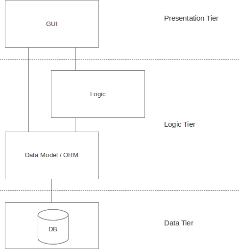
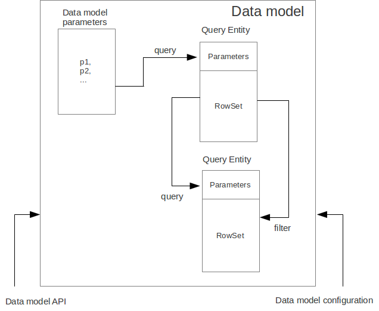
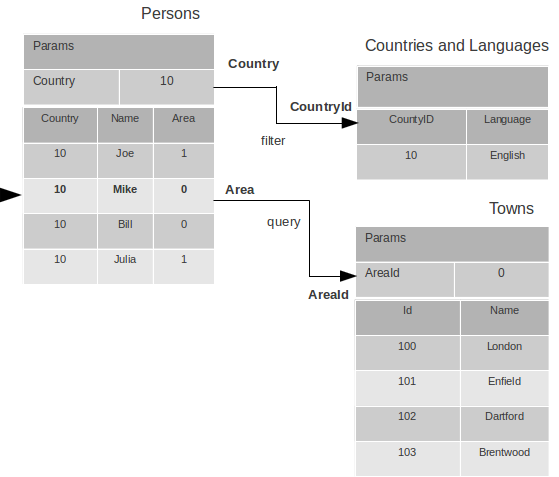
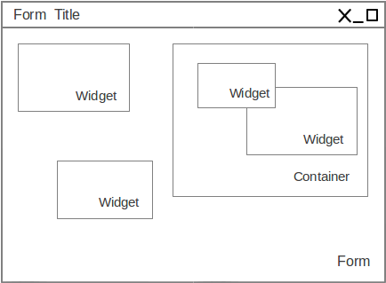
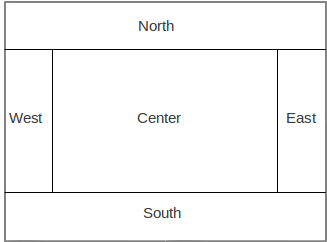
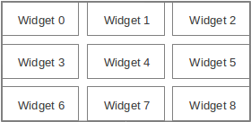
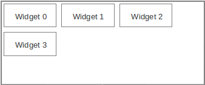
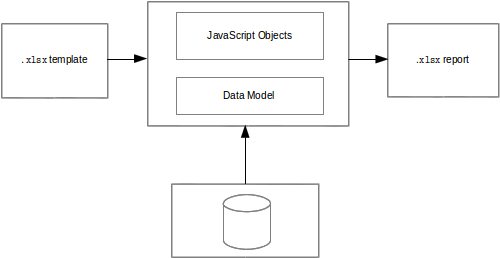

Introduction
About the platform
The Platypus Platform is a JavaScript client and server applications platform for rapid development of enterprise-level information systems.
The platform uses two application programming languages:
-
JavaScript (compatible with the ECMA-262-3 standard) is used to write program logic.
-
SQL is used to access data.
Application creation and editing, deployment, debugging and maintenance are performed using the Platypus Application Designer IDE based on the NetBeans Platform. However, individual files, for example, JavaScript modules, can be edited in any text editor.
The IDE includes following development tools:
-
Application database structure visual editor.
-
SQL queries visual editor.
-
JavaScript code editor.
-
User interface forms visual editor.
The platform offers a set of features, making development process extremely productive:
-
JavaScript modules automatic dependencies resolving, manual resolving is also avaliable.
-
SQL queries with named parameters and SQL clauses re-use.
-
Data model and ORM (Object-Relation Mapping) for JavaScript.
-
Desktop cross-platform as well as HTML5 web-browser user interface presentation sharing the same code and the GUI layout.
-
The GUI widgets which directly interact with the data model, allowing implementation of a CRUD (Create-Read-Update-Delete) user interface with visual configuration and without or just a little coding.
-
Built-in security support, including users authentication and authorization, constraints of access to application resources.
Application structure
Application has a tree structure which contains directories and files. Some files or file groups, called application elements, have a special meaning to the platform.
The types of application elements are:
-
Query is a data source based on SQL query.
-
Module is a structural unit of the JavaScript code.
-
Form is a module with UI layout.
-
Report is a module with a template.
-
Database diagram is a visual representation of the database structure.
During development process, the application tree is stored on disk in the project’s directory src subfolder. For production operation application can be deployed into the database MTD_ENTITIES table.
Runtime configurations
In general, the platform works on three-tier archeticture including presentation, logic and data storage tiers. The presentation and the logic tier can be combined in some configurations.

The platform’s applications can work in the following configurations:
-
2-tier solution is the Java SE desktop client connects directly to the database server. This scheme is recommended for relatively simple applications, which do not require any application server.
 * The 3-tier solution with deskop client and Platypus Application Server
(PAS). This server is a lightweight non-J2EE Java application server.
The custom binary protocol is used to transmit data. The application
server, in turn, interacts with a database server.
* The 3-tier solution with deskop client and Platypus Application Server
(PAS). This server is a lightweight non-J2EE Java application server.
The custom binary protocol is used to transmit data. The application
server, in turn, interacts with a database server. * The 3-tier solution with a Java EE compatible server to host the
platfroms server components. The deskotp client or HTML5 browser
connects to the servlet container or J2EE server using HTTP/HTTPS
protocol. In this case, an application’s data source resources are
managed by the Java EE container.
* The 3-tier solution with a Java EE compatible server to host the
platfroms server components. The deskotp client or HTML5 browser
connects to the servlet container or J2EE server using HTTP/HTTPS
protocol. In this case, an application’s data source resources are
managed by the Java EE container.
3-tier configuration has a number of advantages as compared with 2-tier one:
-
Improved security, as the client has no direct access to the database and database request text is not transmitted via network.
-
Improved performance, as business logic is executed on the server.
-
Better system maintainability.
-
Application is more scalabile.
-
The ability to use HTML5 web browser as a client when using J2EE servlet container or application server.
In case of no-server 2-tier configuration the presentation tier and logic tier operate at Java SE desktop client. In case of 3-tier server configuration the presentation tier operates in the client, either at Java SE desktop client or HTML5 browser and the logic tier runs on application server.
Development steps
To develop an application iteratively perform the following steps:
-
Specify datatbase structure using the database structure diagrams visual editor.
-
Write the queries and specify theirs parameters. If required, implement the queries for updating and adding data in SQL language (it is not needed in general, because data inserts/updates/deletions in most cases can be completed automatically by the data model).
-
Implement the application logic as JavaScript modules. Specify the module’s data model using visual tool. Write the JavaScript code, for example to implement the business-logic.
-
Implement the application user interface as forms using visual tool. Specify the form’s data model. Create the form’s layout using the visual editor. Write JavaScript code responsible for the user interface.
-
Implement reports using the reports tool. Specify the report’s data model. Create the report template using the visual editor. Write JavaScript code if some non-standard data processing required.
Installation and configuration
The platypus developer’s kit all-in-one bundle contains Platypus.js IDE, Platypus.js runtime and Apache Tomcat 8 software packages.
Note
Platypus.js runtime installation instructions are provided in the Administration Guide.
System requirements
System requirements for installing the developer’s kit on a computer includes:
-
32-bit (x86) or 64-bit (x64) CPU, 1 GHz or above
-
2 GB (for 32-bit system) or 3 GB (for 64-bit system) RAM
-
10 GB of free disk space
-
Operating system with graphical user interface: Windows or Linux
-
Oracle JDK 8.40+
-
Internet access for updates downloading
Installation guide
To install the developer’s kit, perform the following actions:
-
Run the platypusdesigner-windows.exe file for Windows OS or platypusdesigner-linux.sh for Linux. The Linux user must have access rights to launch the installer.
-
Click Next to proceed to the next installation step.
-
Read licensing terms and conditions, check the I accept the terms of the license agreement option to accept and click Next to proceed to the next step.
-
Select applications to be installed (Platypus application designer, Platypus.js runtime and Apache tomcat).
-
Select the applications installation directories and options for creating shortcuts on the desktop and in the installed programs menu and click Next to proceed to the next step.
-
Click Install to start selected applications installation process.
-
After the installation process is finished, click Finish.
*Note* Specify the path to the JDK in the `jdkhome` parameter in the Platypus Application Designer configuration file at `platypusdesigner/etc/platypusdesigner.conf`, if the its installation location is other than default. Incorrect value of the `jdkhome` parameter can lead to errors which may occur when launching the designer.
To remove Platypus.js runtime from you computer, perform the following actions:
-
Use the your OS standard mechanism of programs removal, as an alternative, use the uninstall.exe program for Windows or uninstall.sh for Linux from the installation directory.
-
Confirm the components removal by clicking Finish button.
To remove Platypus Application Designer from you computer, perform the following actions:
-
Use the your OS standard mechanism of programs removal, as an alternative, use the uninstall.exe program for Windows or uninstall.sh for Linux from the installation directory.
-
Confirm the components removal by clicking Finish button. If necessary, select the option of removing configuration data from the user’s directory.
To remove Apache tomcat from you computer if it was installed using platypus developer’s kit all-in-one installer, perform the following actions:
-
Use the your OS standard mechanism of programs removal, as an alternative, use the uninstall.exe program for Windows or uninstall.sh for Linux from the installation directory.
-
Confirm the components removal by clicking Finish button.
Configuration tips
Platypus Application Designer supports localization of menus, messages texts, etc. Currently, the following languages are supported:
-
English
-
Russian
The localization language is selected automatically when you launch the application designer according to the regional settings of the operating system.
To force the change of the localization language:
-
Edit the Platypus Application Designer configuration file — append the default_options parameter with the --locale ru:RU or --locale en:US option.
-
Restart the application designer.
You can also change the application designer localization language by adding the --locale ru:RU or --locale en:US option to the command line for launching the Platypus Application Designer.
Platypus Application Designer supports connection of the various user interface Look and Feel (L&F). There are L&Fs for specific operating systems, universal styles (Metal and Nimbus), and LaFs which can be supplied by third-party developers.
To change the Application Designer L&F:
-
Edit the designer configuration file — append the default_options parameter with the --laf option, where LaF corresponds to the name of LaF or full name of the LaF class. If the third-party LaF is used, it is also necessary to include the style library into the path which can be accessed by the Application Designer classloader.
-
Restart the application designer.
Runtime environment setup
The Platypus.js runtime is required to start, debug and deploy it’s applications. You must specify the path to the runtime directory for the Platypus Application Designer to be able to run and debug your applications.
Specify the location of the Platypus.js runtime directory in the computer’s file system:
-
Select Tools Platypus Platform in the main menu of a the designer.
-
In the selection dialog, specify path to the Platypus.js directory.
Add the J2EE server instance which can be used to launch the Platypus application:
-
In the Services window of the Servers node context menu select the Add server… item.
-
In the J2EE server adding wizard, select the server type, server name, and specify its preferences: path to the server directory, administrator’s login and password.
Note If Platypus.js runtime and Platypus application designer were installed using platypus developer’s kit all-in-one installer, Platypus.js location will be specified already.
Application project
In the course of development and further during the application life cycle, the application is represented by the application project.
New project creation
To create a project, perform the following actions:
-
Launch the application designer (if not launched yet). To do that, use the Platypus Application Designer shortcut on the desktop or the corresponding item in the installed applications menu.
-
Select File New Project or click the New Project button on the toolbar.
-
Select the project type as the Platypus Application Project and click Next.
-
Specify the project name and location:
-
Specify the project directory name in the Project Folder Name field.
-
Select the parent directory, in which the Platypus application project will be created, in the Project Location field.
-
Specify the project title in the Project Title field.
-
Click Next to proceed to the next step.
-
-
Click Finish to finish the Platypus project creation.
New project will be added to the Projects panel.
Opening an existing project
To open an existing project, perform the following actions:
-
Select File Open Project or click the Open Project button on the toolbar.
-
Select the project parent directory using the selection dialog, select the project folder, and click the Open Project button.
Opened project will be added to the Projects panel.
Project properties
To change the project properties, select the Properties item in the project root node context menu.
Set the application launching parameters:
-
Select the Run category.
-
Set the default application starting element; if necessary, use the application element selection dialog.
-
Set the type of the client application to be launched: Platypus Client or HTML5 browser.
-
Set the type of the server to be launched: None, Platypus Application Server or J2EE Server.
-
Check the Don’t start application server option to launch the client only.
-
On the Client tab, in the Url field specify the URL of the application server which will be used by the Platypus Client application when launching, if the Don’t start application server option is enabled.
-
On the Client tab, in the Login and Password fields specify login and password for the Platypus Client application.
-
On the Client tab, in the Options field specify additional parameters of the Platypus Client application launching, for example, LaF (Look and Feel).
-
On the Platypus Application Server tab, in the Port field specify a port for the development application server.
-
On the Platypus Application Server tab, in the Options field set additional parameters of the Platypus application server launching.
-
On the J2EE Server tab, in the Server field select the server instance to be used for the application launching from the list of the installed J2EE servers.
-
On the J2EE Server tab, in the Context field specify the name of the web-application in the J2EE server.
-
On the J2EE Server tab, check the Enable security option to enable the security; in this case FORM authentication will be used for the web application.
Set the debugging parameters:
-
Set the Platypus Client debugging port.
-
Set the application server debugging port.
Specify the applicaton’s default datasource:
-
Select the database connecton from the list.
Project structure
A Platypus Platform project has the following structure:
-
The project configuration files.
-
The Application Elements node is the root directory, which contains the application elements tree.
You can perform the following operations on the application elements and directories:
-
Create a new element using the New command.
-
Rename an application element. click the selected application element or directory name, and press the F2 key.
-
Copy and Paste an application element from the buffer to the specified project location using the Paste command.
-
Copy and Move the directory or the application elements to the specified project location. To copy, hold the Ctrl key while dragging a node.
-
Delete an application element using the Delete command.
-
Search for an element in the project using the Find command.
These operations also avaliable by the element context menu, Edit menu in the main menu, or the keyboard hotkeys. Some application elements nodes supports some specific operations, e.g. running or debugging. Specific operations are described in detail in the sections dedicated to the certain types of application elements.
To create a subdirectory in the applicaton tree:
-
Select the New item in the parent directory context menu or select the parent directory and click New File in the main menu, or click the New File button on the toolbar, or use the hotkey.
-
Select the Folder type in the context menu or select Choose file type Platypus application elements Folder on the wizard first step and click Next.
-
Specify the name of the directory in the Name field and click Finish to create a directory, or click Cancel to cancel.
To navigate to the application element, if its identifier is known:
-
Select File Go to application element, or use the Ctrl Shift G shortcut.
-
In the dialog, specify the identifier of the application element in the Provide application element id field of the dialog.
-
Click OK to navigate to the application element, or click Cancel to cancel.
To open an application element, select Open in the application element context menu, or double-click this element. The application element editor opens as a window in the Platypus Application Designer editors area.
To find out the identifier of an application element:
-
Select an application element in the projects application elements tree.
-
Select File Application element info menu item, or use the Ctrl Shift I shortcut.
Running and debugging
To run an application:
-
Click the Run project button on the main toolbar to start a project’s default application element or select Run context menu in an application element’s such as a form, module or an JavaScript file.
-
Select Run context menu in an application element’s such as a form, module or an JavaScript file.
To debug an application:
-
Set breakpoints in the JavaScript program.
-
Click the Debug project button on the main toolbar or select the Debug item in an application element’s context menu. The application will start and the debugger will be attached.
-
After the debugger halts at the breakpoint, see the values of variables and the call stack. To continue the program running, click the Continue button on the main toolbar. Use the Step over button or the F8 key, Step into or the F7 key, Step out or the Ctrl F7 shortcut for step-by-step execution of the program.
If the default application run element is not explicitly specified in the project’s settings the selection dialog will be displayed.
To debug an application running in Apache Tomcat, you should stop server instance if it is already launched and then start it in debug mode. After the server starts use Attach Debugger menu item on the Debug Project button on the main toolbar and specify the debugging port.
When launching the application in a J2EE server, Platypus Application Designer uses the web, WEB-INF and META-INF sub-directories, which are created automatically in the project directory. When launching web application theirs initial structure is created and libraries are copied. After initializing the directories, files responsible for the configuration (WEB-INF/web.xml, server specific configuration file META-INF/context.xml, and JavaScript file responsible for the application launching on the HTML page) are modified, but the libraries are not copied again.
Select the Clean directories web, WEB-INF and Run menu item in the project context menu, if it is necessary to update the libraries in the web and WEB-INF directories. The libraries will be removed, and at the next application launch these libraries will be copied from the platform’s runtime directory.
Database connections
Define an application project’s database connections and the default connection of the application. The default connection to be used when a connection is not explicitly referenced in application elements.
Add a new database connection:
-
Open the Services panel.
-
Select the New Connection menu item of the Databases node.
-
In the New Connection dialog select the JDBC driver and provide the JDBC URL, database credentials, scheme and connection name. This name will be used as an string identifier to refer to the connection JNDI resource in the application.
A JDBC URL example for the H2 database server with a database located in the user’s home directory db subdirectory: jdbc:h2:tcp://localhost:9092/~/db.
Specify the project’s default database connection: go to the project’s Properties and to the Running panel. Select the default connection from the Datasource combobox.
When opening the project, the application designer tries to connect to the database, in case of failure it switches to the limited functionality mode, and some editor tools are disabled.
Note
We recommend that a developer in the team working on the project creates and uses his/her own copy of the database for debugging and testing purposes. Additionally, a common reference database is created, and all modifications, which have passed the debugging stage at the developer’s individual databases, are applied to this common one.
Use the developer’s local database on the H2 database server, supplied with the platform.
To launch the built-in H2 database server:
-
Open the Services panel.
-
Select the Databases H2 node and enable the Start menu item.
After the database server is launched and becomes available via the network or locally, connect to this server by selecting the Connect to database item in the context menu of Databases node child node on the Services tab.
To disconnect, select the Disconnect from the same child node of Databases node on the Services tab.
Version control
During application development and further during the application life cycle, it is recommended to use a version control system to manage the source project files.
The application designer has built-in support of the following version control systems:
-
Subversion
-
Git
-
Mercurial
To access options of these version control systems, use the Team item from the global menu and/or Versioning sub-menu of the project context menu.
Note
Refer to the documentation of the relevant version control system for details about this system usage.
Database diagram
Database diagram is an application element responsible for representation of the database structure. For example, the diagram can specify some part of the knowledge domain. Generally, the project contains several database structure diagrams at the developer convenience.
A database structure diagram is a visual representation of the database structure, and it does not directly affect the application functionality.
The structure of the relational database is determined by the tables and links between them. Links between two tables are implemented through the foreign keys.
New diagram creation
To create a new database diagram, perform the following actions:
-
Select the New item in the parent directory context menu, or select the parent directory and click New File in the main menu, or click the New File button on the toolbar, or use the hotkey.
-
Select the Database structure diagram type in the context menu or select Choose file type Platypus application elements Database diagram on the wizard first step and click Next.
-
Select the connection to database and database schema:
-
Select the default database; click the Default button or a connection to the external database; click the Specific button and select a specific database connection.
-
Select a schema in the database in the Schema drop-down list; click the Default button to select a default databse user’s schema.
-
Click the Next button.
-
-
Specify the name of the new database structure diagram in the Name field, and click the Finish button to create a new application element, or click Cancel to abort.
After creating the database structure diagram, fill it with the database tables. To do that, define the tables, theirs fields and theirs descriptions. After that define foreign key links between the tables.
Diagram visual editor
Diagram is a representation of some tables in the database, as well as the links between them. In general, one includes a part of the database overall structure, which is, for example, related to the certain segment of application functionality.
Visual editor tool is used for editing database structure diagrams.
Visual editor allows you to modify the database structure e.g. add or delete tables, links between tables, and indexes. The same table can be represented in several diagrams.
For navigation through a diagram, it is convenient to use the diagram inspector panel. In the inspector, tables and their fields are represented in the tree structure. When selecting a table or a field in the inspector, the same selection takes place in the diagram editor.
To add an existing table to the diagram, perform the following actions:
-
Select the Add table menu item on the editor toolbar, or use the Ctrl Shift Insert shortcut.
-
Select a table in the table selection dialog; if necessary, use the search function. To access it, click Find.
-
Click OK to add the table, or click Cancel to cancel.
-
If necessary, drag the table in the diagram to the desired location.
-
Save the application element by clicking the Save All button on the Platypus Application Designer toolbar, or by pressing the Ctrl Shift S shortcut.
To create a new table and to add it to the diagram, perform the following actions:
-
Select the Add table Create new table item in the menu on the editor toolbar.
-
Specify the name of the new table in the dialog.
-
Click OK to add the table, or click Cancel to cancel.
-
If necessary, drag the table in the diagram to the desired location.
-
Save the application element by clicking the Save All button on the Platypus Application Designer toolbar, or by pressing the Ctrl Shift S shortcut.
Note
A numeric primary key field will be automatically created for a new table.
To remove a table from the diagram, perform the following actions:
-
Select a table in the diagram.
-
Click the Delete button on the editor toolbar.
-
In the confirmation dialog, click the Delete from diagram button to remove the table from the diagram (from the diagram only, not from the database). Click the Drop table button to remove the table from the database (physical destruction of the table), or click Cancel to cancel.
-
Save the application element by clicking the Save All button on the Platypus Application Designer toolbar, or by pressing the Ctrl Shift S shortcut.
To add the table fields, perform the following actions:
-
Select the table in the diagram.
-
Click the Create new field/parameter button on the toolbar of the table fields editor tab. The new field dialog appears. Provide the new table field properties and click OK button to create the new field or Cancel to cancel the process.
Table field properties:
-
name is the field’s name in the table
-
description is the field’s description
-
type is the field’s data type
-
type name is the data structure type name, this field is enabled if the STRUCT data type is selected
-
size is the field length
-
scale is the field scale or precision
-
nullable determines if NULL values are allowed for the field.
| Type name | Description |
|---|---|
NUMERIC |
Number |
DECIMAL |
Decimal number |
VARCHAR |
String with limited length |
TIMESTAMP |
Date and time |
DATE |
Date |
STRUCT |
Structure |
BLOB |
Binary object with unlimited length |
CLOB |
String with unlimited length |
To edit the field, perform the following actions:
-
Select the field node among the table daughter nodes in the data model inspector.
-
Edit the field parameters in the Properties editor window.
To remove the field, perform the following actions:
-
Select the table field in the diagram.
-
Click Delete on the fields editor toolbar, or use the Ctrl Delete shortcut.
To edit the table indexes, use the inspector: open the node of the relevant table, and use the Indexes node.
To add a new table index, perform the following actions:
-
Select the Add index item in the Indexes node context menu of the corresponding database table.
-
In the table columns selection dialog, select necessary fields and click OK to add the table index, or click Cancel to cancel.
-
If necessary, remove the field from the index using the Delete item from the index column context menu.
-
If necessary, modify the order of the fields in the index using the Move up and Move down items from the index column context menu.
-
If necessary, change the status of the Ascending checkbox on the properties panel for the index column, setting the ascending or descending sorting order.
-
Set the index name in the Index name field on the index node properties panel.
-
If necessary, check the Unique option on the index node properties panel to make the index unique or non-unique.
-
If necessary, check the Clustered option on the index node properties panel to create a clustered index.
-
If necessary, check the Hashed option on the index node properties panel to enable or disable hashing for this index.
To modify an table index, perform the following actions:
-
Select the index in the table indexes list.
-
Edit the index; to do that, follow the same steps as when adding a new index.
To delete an index, perform the following actions:
-
Select the index among other child nodes of the relevant table in the inspector.
-
Select the Delete item in the index node context menu.
To add a foreign key for the table, perform the following actions:
-
Using the mouse, drag the field of one table to the primary key field of the other table.
After that, a foreign key will be created in the database; visually, the link will be represented by the line with arrow between the tables fields. * Save the application element by clicking the Save All button on the Platypus Application Designer toolbar, or by using the Ctrl Shift S shortcut.
Important
Data types of the fields connected by the foreign key link must be the same.
To build a hierarchical table structure (unary link), drag the table field to the primary key field of the same table using the mouse.
To remove the table foreign key, perform the following actions:
-
Select the foreign key link using the mouse.
-
Click the Delete button or use the Ctrl Delete shortcut.
-
Save the application element by clicking the Save All button on the Platypus Application Designer toolbar, or by using the Ctrl Shift S shortcut.
To query the data from the table, perform the following actions:
-
Select the table in the diagram.
-
Click the Query Table Data button on the local toolbar. The data will be requested from the table, and the results will be displayed in the editor’s output area.
To modify the size of the database structure diagram visual representation, perform the following actions:
-
Click the Zoom In button to scale up, or Zoom out button to scale down the representation of the database structure in the editor.
To search through the diagram, perform the following actions:
-
Click Find to open the diagram search dialog.
-
Specify the search string.
-
Select fields to be searched through: Datasets, Fields, Params, and check (uncheck) the following options: use the option Whole words to search for whole words and the Match case to perform a case-sensitive search.
-
Click Next and Previous buttons to go to the next found entity.
-
Click Close to close the search dialog.
SQL query
Query is an application element which defines the SQL expression to be executed in database. A query’s SQL text is preprocessed before execution.
Queries can solve several tasks:
-
Requesting data from the database (Select queries).
-
Definintion of metadata for enabling implicit data modifications commands generation (Select queries).
-
Performing explicit data manupulations (Insert, Delete, and Update queries).
Note
In most cases, data adding and updating tasks are carried out by the data model automatically when saving changes. To do that, you can just specify a query of the Select type.
Queries have the following characteristics:
-
Queries support named and typed parameters.
-
Sql clauses are re-used to enable inclusion of some queries into other queries without any duplication.
-
You can edit queries in the visual tool and as Sql text form simultaneously.
-
Query results are translated into entities which can be processed by JavaScript code in ORM style.
-
Query allows you to define the pattern for processing data changes made while the application is running. It is possible to define a list of tables where the changes will be stored.
New query creation
To create a new query, perform the following actions:
-
Select the New item in the parent directory context menu, or select the parent directory and select the New File item in the main menu, or click New File on the toolbar, or use the hotkey.
-
Select the Query type in the context menu, or select Choose file type Platypus application elements Query on the wizard first step and click Next.
-
Select the connections to the database and the schema:
-
Select the default database or click the Default button to choose project’s default database to be used with new query.
-
Click Next.
-
-
Specify the name of the new query in the Name field, and click Finish button to create the new application element, or click Cancel to cancel.
After the query creation wizard completes the steps, a new empty query is created.
Query editor
The special editor is used to edit a query Sql text and its support configuration files. This editor allows you to perform visual editing of the query and direct modicatation of the Sql text.
Full-featured editing using the visual editor is possible if the connection to the database is established. If there is no connection to the database, only the Sql source modification is possible.
To determine the general properties, use the query properties panel or add the relevant annotation to the query header manually:
-
Select the root node in the query inspector.
-
Edit the query properties on the Properties panel (if necessary, enable the panel in the Windows Properties global menu).
-
Check the public option to make the query accessible to remote invocation, e.g. on the server and using from the Platypus Client or browser data model.
-
Check the procedure option, if the query will be used to call the stored procedure.
-
Check the readonly option, if you don’t want to accumulate chnages of data from this query later in modules in corresponding data models.
-
Select the specific connection to a database if you want the query to be executed against this database. To assign a query to the default database connection, clear this field.
-
For navigation through the queries, it is convenient to use the query inspector panel. In the query inspector, parameters, tables, and sub-queries are represented as a tree nodes. Parameters and data fields are the leaves.
A table or sub-query can be selected both in the visual editor and in the query inspector.
You can start editing the Sql query from setting the query parameters (if necessary) or from using the visual editor.
To add a database table to the query, perform the following actions:
-
Select the Sql designer tab in the query editor.
-
Select the Add table/Add query Add table item on the editor toolbar, or use the Ctrl Shift Insert shortcut.
-
Select the table from the list in the table selection dialog. If necessary, select the schema in the Schema drop-down list. The Default button sets the default schema for the application, if necessary, use the search function by clicking the Find button.
-
Click OK to add the table, or click Cancel to cancel.
-
If necessary, drag the table to the desired location in the query diagram.
-
Save the application element by clicking the Save All button on the Platypus Application Designer toolbar, or by using the Ctrl Shift S shortcut.
To include the existing query as a sub-query into the query being edited, perform the following actions:
-
Select the Add table/Add query Add query item in the menu on the editor toolbar.
-
Select the Query application element type in the selection dialog.
-
Click OK to add the query, or click Cancel to cancel.
-
If necessary, drag the query to the desired location in the visual editor diagram.
-
Save the application element by clicking the Save All button on the Platypus Application Designer toolbar, or by using the Ctrl Shift S shortcut.
Note
Drag the existing query from the application elements tree of the Projects panel onto the visual editor diagram in order to include it into the query being edited without opening the application elements selection dialog.
To assign the table or a sub-query an alias, just type it in the text editor or the query or perform the following actions:
-
Select the table or sub-query in the query diagram.
-
On the Properties panel, specify the value in the alias field.
-
Save the application element by clicking the Save All button on the Platypus Application Designer toolbar, or by using the Ctrl Shift S shortcut.
To remove the table or sub-query from the query visual editor diagram, perform the following actions:
-
Select the table or sub-query in the diagram or in the query inspector.
-
Click the Delete button on the query editor toolbar to remove the table or sub-query from the diagram.
-
Save the application element by clicking the Save All button on the Platypus Application Designer toolbar, or by using the Ctrl Shift S shortcut.
Note
If the Properties panel is not displayed, enable this panel; to do that, select the Window Properties item in the Platypus Application Designer main menu.
To add the query parameters, perform the following actions:
-
Click the New field/parameter button on the fields editing tab toolbar to add a field.
-
Modify the new parameter properties. To do that, select its node among the query parameters nodes in the inspector and edit the parameter properties in the Properties window.
-
Save the application element by clicking the Save All button on the Platypus Application Designer toolbar, or by using the Ctrl Shift S shortcut.
Parameter field properties:
-
Name is the parameter name.
-
Description is the parameter description.
-
Type is the parameter type, select in the drop-down list.
-
Type Name is the data structure type name, this field is accessible when the Structure field type is selected.
-
Size is the field length or precision.
-
Mode defines this parameter mode, in the case the parameter will be used as the stored procedure parameter.
Stored procedure parameter modes:
| Value | Description |
|---|---|
in |
IN operation mode |
in/out |
IN/OUT operation mode |
out |
OUT operation mode |
unknown |
Parameter operation mode is unknown |
To edit the query parameter, perform the following actions:
-
Select the parameter node from the parameters nodes in the inspector.
-
Edit the parameters. To do that, follow the same steps as when creating a parameter.
-
Save the application element by clicking the Save All button on the Platypus Application Designer toolbar, or by using theCtrl Shift S shortcut.
To remove the parameter, perform the following action:
-
Select the parameter on the parameters panel.
-
Click the Delete button on the parameters editing tab toolbar, or use the Delete shortcut.
-
Save the application element by clicking the Save All button on the Platypus Application Designer toolbar, or by using the Ctrl Shift S shortcut.
The query parameter can be linked to a table or sub-query field, or to a sub-query parameter.
When linked to field, the parameter will be included into the Sql source and visually, the link will be displayed as a black arrow.
When the parameter is linked to a sub-query parameter, the parameters will be mapped in the query model, visually, this link will be displayed as a magenta arrow.
To add a link between the parameter and a field or sub-query parameter, perform the following actions:
-
Using the mouse, drag the parameter to the table field or sub-query parameter to which the parameter should be linked. Visually, the link will be displayed as an arrow between tables and sub-queries fields.
-
Save the application element by clicking the Save All button on the Platypus Application Designer toolbar, or by using the Ctrl Shift S shortcut.
To remove a link, perform the following actions:
-
Select the link between a parameter and a table field or sub-query parameter.
-
Click the Delete button or use the Delete shortcut.
-
Save the application element by clicking the Save All button on the Platypus Application Designer toolbar, or by using the Ctrl Shift S shortcut.
Modifications of the SQL query made in the visual editor are displayed in the source text on the SQL Source panel, and vice versa.
Modify the Sql source text in the editor, for example, in order to add custom conditions, or write the Sql source text from scratch. Use the query inspector to drag the table fields and parameters from the inspector tree right into the query source text. For the tables fields names, use the Sql code auto-completion function.
If necessary, database specific Sql clause can be provided for the query.
Note
Use the database specific Sql only when it is really necessary, and only if there is no need to enable portability of applications to different databases.
Query execution output fields are determined automatically as a result of the Sql source text processing. Check this output field in the inspector’s Output Fields node.
It is possible to change the output field type, as well as its description. To do that, perform the following actions:
-
Select the output field among the Output Fields node children in the inspector, and edit its properties in the Properties editing window.
-
Specify the output field type in the Type property by selecting it in the drop-down list.
-
Specify the output field description in the Description property.
To execute a database Sql query in the database, perform the following actions:
-
Select the application element and select the Execute item in the query context menu or in the SQL Source editor context menu. Execution results will be displayed in the application designer output window.
-
If the query has parameters, specify them in the query execution dialog. If necessary, modify the query source in the same dialog.
-
Click OK to execute the query, or click Cancel to cancel.
To change the size of the query diagram visual representation, perform the following actions:
-
Press the Zoom In button to scale up, and press the Zoom out button to scale down the query diagram.
To use the search function for searching through the query diagram, perform the following actions:
-
Click the Find button to open the search dialog for searching through the query diagram.
-
Specify the search string, select fields to be searched through: Datasets, Fields, Params, and check (uncheck) the following options: Whole words to search for whole words, Match case to perform case-sensitive search.
-
Click Next and Previous buttons to go to the next search result.
-
Click Close to close the search dialog.
Sql source
Edit the query’s Sql source on the Sql Source tab. Sql syntax must comply with the Sql-92 standard.
The Sql source text must begin with a special header, in a form of multiline Sql comment.
It is required to define a query name within the application in accordance with the requirements applicable to JavaScript identifiers. On creating a new query in Platypus Application Designer, its name will be generated according to the created files name, spaces will be replaced by underscores.
Specify the query name, for this use the @name annotation in the query header:
/** * Query header example * @name AllDocuments **/ SELECT * FROM Document
@public annotation enables using this query in a remote client’s data model, which fetches and writes data over network.
@procedure annotation enables using this query with database stored procedure.
Sql Select query can contain sampling of all fields using * symbol or only the required ones using explicit fields definition. If the first type of sampling is used, the names of the properties that will be accessible in the JavaScript code are defined by the table columns names, and can be uppercased or lowercased. To create the code compatible with various databases, it is recommended to use the second option with explicit indication of the query output fields, for example Select a, b, c From table.
Platypus queries can contain named parameters. Every parameter must begin with ':' prefix: :paramName, where paramName is the name of the parameter.
Example of a SQL query source with the named parameters:
/** * Device log for period of time * @name Timelog **/ Select * From TR_TRACKINGDEVICE_LOG trackingLog Where trackingLog.DEVICE_ID = :deviceId and trackingLog.TIME >= :timeFrom and trackingLog.TIME <= :timeTo Order by trackingLog.TIME asc
Queries can be used again in other queries. To use a query as the sub-query, include its name in the Sql source with '#' prefix: #SubQuery, where SubQuery is the name of the query to be used as a sub-query.
For example:
/** * Time log priority filter * @name Filter **/ Select * From #Timelog timeLog Where timeLog.PRIORITY > :priority
In the snippet above, a query named Timelog is used as the sub-query in the Filter query.
If the sub-query contains parameters, it is necessary to associate them with the parameters of the query into which it was embedded.
Select query type returns a data array which is loaded to the some data model and can be processed using the JavaScript code. Concrete data values of these dataset can be changed while the application is running. When enabled, this data changes can be automatically converted into the set of Sql Insert and Update commands when saving to the database. To make this mechanism work, the data array returned by the Select query must contain the primary keys of all relevant tables. This enables the ORM implementation to determine to which database table row write the changed data.
In order to specify, which tables mentioned in the query can be modified using this mechanism, use the following annotations: @writable … For this annotation, provide the list of tables, using spaces to delimit them.
If there is no @writable annotation, all tables mentioned in the query will become writable.
To disable writing to all tables mentioned in the query, add the @readonly annotation to the query header.
In the example below only the Document table is writable:
/** * @name docsCategories * @writable Document **/ Select * From Document d Inner Join Category c on d.CategoryID = c.CATEGORY_ID
Sql dialect source
Enter database specific Sql source text at the Sql dialect source tab.
It is necessary to enter the correspondent source text in the Sql source field. This source text will be used for determination of the metadata for processing the query results.
If the specific Sql source text is provided, it will be used during the query execution, and the main Sql source text will be used to extract the metadata.
Note
Use the database specific Sql only when it is really necessary, and only if there is no need to enable portability of applications to the different databases.
An example of an Oracle database specific hierarchical query:
Select Level, ename "employee", empno, mgr "manager" Form emp Start With mgr is null Connect By Prior empno = mgr;
For the dialect query snippet above the main Sql source can be:
/** * Hierarchial employees query * @name Employees **/ Select * FROM emp
Security
Generally, access to data in the database must be differentiated for various user groups. In Platypus.js there is an embedded security mechanism which implements the constraints of access to the resources based on the roles of the logged in user who is performing the current operation.
To limit the access to the query for certain roles, add the @rolesAllowed … annotation into the query header. For the added annotation, specify the list of roles delimiting them by spaces.
The roles listed in the @rolesAllowed annotation are granted with rights both for reading and writing data to the database. If more detailed definition of the data access policy is required, use the @rolesAllowedRead and @rolesAllowedWrite annotations.
Specify the list of roles, for which only data reading is allowed, in the @rolesAllowedRead annotation.
Specify the list of roles, for which only data writing is allowed, in the @rolesAllowedWrite annotation.
If none of the @rolesAllowed, @rolesAllowedRead, or @rolesAllowedWrite annotations are specified for the query, the database data manipulated by the query are readable and writable for any user.
An example of the query where reading and writing rights are granted to the admin role only:
/** * @name AllCategories * @rolesAllowed admin **/ Select * From Category
JavaScript module
Module is a JavaScript file containing the constructor function and some specific resources. Modules contain data model responsible for data access and <ModuleName>.model file contains its data model definition.
Modules can be executed both under JVM in a client and server on Oracle Nashorn javasceript engine or in a browser.
New module creation
To create a new module, perform the following actions:
-
Select New in the parent directory context menu, or select the parent directory and click New Filе in the main menu, or click New File on the toolbar, or use a corresponding shortcut.
-
Select Module type in the context menu, or select Choose file type Platypus application elements Module on the wizard first step and click Next.
-
Enter the name of a new application element in the Name field and click Finish to create it, or click Cancel to cancel.
JavaScript code editor
You can edit the module code in the JavaScript code editor. To open the application element editor, double-click an application element in the project tree.
To edit the JavaScript code:
-
Open the Source tab of the module editor.
-
Change text in the JavaScript code editor.
-
Use the code completion for field names and functions of objects and modules.
-
Use automatic transition to declarations of variables, functions, and to the functions of other modules; to do this, click a module ID or function while holding down the Ctrl key.
-
Use context menus and shortcuts to use built-in editor functions.
-
Save the application element by clicking Save All on the Platypus Application Designer toolbar or by using the Ctrl S keyboard shortcut.
*Note* Use the editor's context menu Format menu item to format the JavaScript code automatically.
If necessary, configure the code editor parameters; to do this:
-
Select the following main menu items: Tools Options.
-
In the Options properties dialog, select the Editor tab.
To configure auto completion modes, go to the Code Completion tab and enable or disable corresponding options.
Module constructor
Using modules allows you to manage the complexity according to the object-oriented programming principles.
Module is an equivalent of a class in other programming languages, such as in Java or C++.
Every module contains a constructor function. This function is used for module’s instanses creation.
Constructor function can have a header, which is represented as a comment in the JsDoc format and is located at the top of the module constructor function definition.
Example of a module with a header:
/** * Module description goes here * * @constructor * @rolesAllowed admin * */ function ModuleConstructor(p) { ... } function otherFunction() { ... }
If a JavaScript file contains exactly one top-level fucntion, this fuction is considered as a module constructor, otherwise the module constructor must be marked with the @constructor annotation.
In addition to the @constructor annotation, a header may contain the module description, annotations for defining security constraints and other JsDoc annotations.
Specify module instance methods:
function ModuleA() { this.somePublicMethod = fucntion(p) { //instance method ... } }
Module instance methods are available for the client code.
Add module scope methods and fields:
function ModuleB() { var a, b, c;//private `fields` this.somePublicMethod = function(p) { //instance method ... } function somePrivateMethod() { //scope function ... } }
Create or get a module instance by the following ways:
-
Create an instance of the module with the help of the new keyword, using a module constructor, for example:
var moduleInstance = new ModuleA();
where ModuleA is a module constructor. * Create an instance of the module with the help of the new keyword using global object and its properties, for example:
var global = this;// Somewhere in global namespace var moduleName = getPrincipalStartView();// Some impersonate technique var moduleInstance = new global[moduleName]();
where moduleName is the module constructor name string, for example, "WebModule"; * Create a proxy/stub for the server module, to use RPC on client or Local procudure call (LPC) on apllication server:
var moduleStub = new P.ServerModule("Processor");
where Processor is the module constructor name string. The server module should be marked with the @public annotation to enable access via the network. Server modules, with is used only within application server don’t need the @public annotation to be used with LPC.
To call the module’s instance method, use the following structure, for example:
moduleInstance.getResult(10, function(aResult){ var result = aResult; });
Dependencies resolving
When executing the code on a application server or on a client, all application elements, on which initial application element depends, are loaded during the process of automatic dependencies resolution.
Automatic dependencies resolving works as follows:
-
The source code is analyzed and expressions of the following types are searched for the following expressions:
new ModuleName()
new ServerModule("Implementation")
where ModuleName is the name of the module and Implementation is module name wich is executed on the server side. * Application elements with the specified names are loaded or server proxies for server modules are generated. * The process continues recursevly for the loaded modules, except for the server proxies.
If it is not necessary or not possible to resolve the dependency automatically, for example, if you want to determine the called module in a dynamic manner, you can use the manual dependencies resolving with P.require function.
Use P.require([param], callback) global function, where param is the module constructor name, or the relative path to the JavaScript file in the application, or an array of these elements, callback is a function, which will be called when all the specified modules are downloaded and executed. Both synchronous and asynchronous modes of P.require function calls are supported. If callback is omitted, than synchronous version of function is used.
|
|
Don’t use manual dependencies resolving against a server modules. It will lead to an attempt to download the module body on the client. |
Example of using manual dependencies resolving is as follows:
var moduleName1 = "Module1", moduleName2 = "Module2"; P.require([moduleName1, moduleName2], function() { var m1 = new Module(moduleName1); m1.bar(); var m2 = new Module(moduleName2); m2.foo(); });
The following example shows how to use the P.require function for loading the module by its constructor name as well as the plain JavaScript file by specifing its path:
P.require(["Module1", "localLib.js"], function() { //Platypus module var m1 = new Module("Module1"); m1.bar(); // Constructor LibObject is defined in localLib.js var o1 = new LibObject(); });
Relative paths are counted off from the app directory of the Platypus application project. If the JavaScript file path matches the Platypus module identifier name, the Platypus module will be preferred.
The P.require function also has a synchronous variant, which can be used in the server code. In this case, if you don’t need to maintain compatibility with the client’s code, the second parameter is optional:
P.require("localLib.js"); // LibObject is defined in localLib.js var obj = new LibObject();
The P.require function supports relative paths for both synchronous and synchronous variants:
P.require("./sublibs/sublib-a.js"); // SubLibObjectA is defined in sublib-a.js var obja = new SubLibObjectA(); P.require("./sublibs/sublib-b.js", function(){ // SubLibObjectB is defined in sublib-b.js var objb = new SubLibObjectB(); });
You should pay attention to the combination of automatic and manual dependencies resolution. For example, in the following snippet it is not necessary to call the P.require function:
var moduleName1 = "SampleModule1", moduleName2 = "SampleModule2"; P.require([moduleName1, moduleName2], function() { var m1 = new SampleModule1(); m1.bar(); var m2 = new SampleModule2(); m2.foo(); });
This code leads to the automatic dependencies resolution regarding to the SampleModule1 и SampleModule2, as calls of their constructors are present in the code in explicit form.
On the other hand, creating modules in the var m = new SampleModule1() form is natural and it is preferred in most cases. In order to avoid automatic resolving of dependencies, explicitly specify module constructor names in the form of string literals the P.require function parameter:
P.require(["SampleModule1", "SampleModule2"], function() { var m1 = new SampleModule1(); m1.bar(); var m2 = new SampleModule2(); m2.foo(); });
This method of calling the P.require function excludes these explicitly specified constructor names in the first parameter from the automatic dependencies resolution. So, SampleModule1 and SampleModule2 will be loaded only when calling the P.require, rather than before starting the application.
Security
The executable module code is a resource, access to which can be restricted on the basis of the roles. When a user, who has no rights to execute some code, tries to call it, a security exception is thrown.
In order to restrict access to the entire module code, add the @rolesAllowed… annotation to the module header. Specify roles, allowed to access the module code execution, in the @rolesAllowed annotation, dividing them by spaces. If the annotation is omitted, access to the module is granted to all users.
You can restrict access to the module code on the level of an individual function. To do this, add the @rolesAllowed annotation to the function’s JsDoc. The restrictions on the function level have a higher priority than the module level restrictions. For example, only a user with the role2 role from the following example will have access to the f2:
/** * @constructor * @rolesAllowed role1 role2 * */ function ModuleC { var self = this; /** * @rolesAllowed role2 */ this.f2 = function() { //... } }
Use principal property to get access to the information about the current user in the executable code. The principal property is read-only. The object of information about the user contains the name property, i.e. the name of the current user, and the `hasRole()`method, which allows you to check if this user has any role:
P.Logger.info('Current user: ' + P.principal.name); if (P.principal.hasRole('Manager')) { // Some operations allowed only to managers ... }
Use P.logout(onLoggedOut, onError) function, where onLoggedOut is a function, which will be called after the session is terminated and onError is a function, which will be called if an error occur. Open forms will be closed and the user will see the login and password entering form.
Resources loading
The platfrom runtime enables loading of resources in the form of binary data and text. Resources may be loaded using their applicaion paths or URLs. Applicaion paths are counted off from the app root directory of the application project. Use the Resource object methods for resource loading.
To download a resource, use the Resource.load(path, callback) method, where path is a application path or URL, callback(obj) is a function, which will be called after the resource is loaded, obj is an array of bytes of the downloaded resource for the server code and Platypus Client or an object of the ArrayBuffer type for the HTML5 browser in the case of binary data and string in the case of text data:
//Loads binary resource P.Resource.load("res/pict.bin", function(obj) { ... })
//Loads text resource P.Resource.load("res/list.txt", function(obj) { ... })
You can use a synchronous version of this method with a single parameter in the server code or in the code, which is executed in the J2SE Client. In this case, the method itself will return an array of bytes of the downloaded resource:
//Loads binary resource synchronously var obj = P.Resource.load("res/pict.bin"); ...
To get the absolute path to the application directory, use the Resource.applicationPath read-only property:
//Reads the application's path P.Logger.info(Resource.applicationPath);
Data model
Data model is a module’s persistence manager. It provides access to the data obtained from a relational database or any other data source. Data model allows you to perform the following tasks:
-
Fetch data from the data source(s) to the entities data arrays.
-
Automatically requery data, according to the inter-entities links.
-
Save changes made to the entities data (insert, update and delete).
-
Entities data change events handling with JavaScript.
Data model consists of entities and links and is configured using the visual editor.

Data is stored in the form of JavaScript objects within an etnity’s data array.
Entities are created using a module implements special datasouce interface methods or a query application element. NOTE: Table entity is a special query entity, which selects all data from the table. It is created automatically by runtime. A table entity can be used only in two-tier configurations with direct connection to a database.
Each entity can have parameters and contains a data array with predefined fields according to the data schema defined by the module or query, on the basis of which the entity is created.
In general, a data array comprised of objects, each of which corresponds to a tuple in the query results.
There is a cursor for each enitity. The cursor can point to some element in the data array and determines the current item of this entity. Also the cursor can point to null. The entity cursor value can affect to the linked entities data.
Entity fields and parameters may be connected by links. The following link types are used in a data model:
-
Query link connects source field of one entity with another entity parameter as target field.
-
Reference link defined by ORM on the basis of foreign keys derived from database/script datasource structure.
Query link requeries the target entity’s data array according to the parameter value change. The new parameter value is determined according to the source point of the link. Both entitiy’s cursor property’s value or a parameter value can be used. When the value at the link source changes, new data is requested from the database or application server and reoladed in the target entity data array.
Reference link is defined by a database table/script datasource structure foreign keys. This kind of link is created automatically, if a entitiy’s schema contains fields included to such foreign key. This type of link does not affect the content of the data arrays and is used to generate inter-element connections between element of entities' data arrays. This is done via new properties, wich are created while data fetching. The link of this type is visually shown as a dashed line on the data model diagram.
*Note* To get inter-instance connections work, primary and foreign keys are required. Such keys may come from database structure definitions or from schema definitions in a JavaScript datasource module.

The figure shows an example of operation of query links for the three entities in the data model. In the Persons entity, a cursor is pointing to a string corresponding to a person named Mike.
When initializing a module, data corresponding to the input parameter values is loaded into the model by default, then every change of input parameters leads to a cascade update of all datasets, which are directly or inderectly associated with the modified parameter.
For any entity you can determine any number of incoming and outgoing links of both types. When building connections you should consider the following restrictions:
-
Links must not create circular references.
-
Linked fields and parameters of the source and the target entities must match by thiers type: the types of connected fields and parameters must allow the mutual conversion of values. For example, it is possible to connect field if there’s a number specified for the connection on the source, and a string specified the connection on the target, it is quite possible, since there is a possibility of an unambiguous conversion of a number to a string, but not vice versa.
Added, deleted and changed datasets of these entities objects are saved to the database or sent to the application server for subsequent saving when calling the save function of the data model object.
The data model object is represented in the module constructor by the result of call to P.loadModel(name) function, where name is name of already loaded module.
Create a variable for the data model object and assign result of P.loadModel() to it. In the following code snippets we will use such variable:
function ModuleD() { var model = P.loadModel(this.constructor.name); //... }
-
Set the data model parameters to update the data of the linked entities.
-
Get access to data for data processing, analysis, and so on.
-
Use inter-instances connections to process the data in ORM manner.
-
Use the cursor as "current" data array element pointer.
-
Specify entity event handler functions and write their JavaScript code.
-
Alter, remove or add objects in the entity’s data array and allow the data model to save the changes.
-
Read entity schema (fields metadata) for special needs.
To force refetch of all data model entities' data arrays, call the requery function of the model object:
model.requery(onSuccess, onFailure)
where onSuccess is the handler function for refresh data on success event (optional), onFailure is the handler function for refresh data on failure event (optional).
Data model editor
Data model is configured using the visual editor.
For navigating to a data model elements, it is convenient to use a data model inspector panel. In the data model inspector, entity and model parameters are presented in the form of a tree structure. You can select an entity or a connection both in the visual editor and in the data model inspector. Mutual positioning of the model data inspector and its diagram is possible.
To add a table entity to the data model, perform the following steps:
-
Select the Datamodel tab of the module’s editor.
-
Select the Add query / Add table Add table menu item on the editor toolbar, or use the Ctrl Shift Insert shortcut.
-
Select the table from the list in the table selection dialog, if necessary select a schema from the drop-down Schema list; the Default button sets the default schema for the application; use the search option by clicking Find, if necessary.
-
Click OK add the table or click Cancel to cancel.
-
If necessary, move the table on the model diagram to the right place.
-
Save the application element by clicking Save All on the main toolbar or by using the Ctrl Shift S keyboard shortcut.
To add an entity based on an existing query to the data model, perform the following actions:
-
Select Add query / Add table Add query on the editor toolbar.
-
Select an application element of the Query type in the dialog.
-
Click OK to add the query or click Cancel to cancel.
-
If necessary, move the query on the visual editor diagram to the right place.
-
Save the application element by clicking Save All on the main toolbar or by using the Ctrl Shift S keyboard shortcut.
*Note* Drag an existing query or a module from the application elements tree on the project panel to the visual editor diagram of the data model to include it into the editable data model.
An entity object and its data is available to module’s JavaScript code. When you add a new entity, its name will be specified by default, according to the query, or module consturctor name or a table name in the database. To change the name of the entity, perform the following steps:
-
Go to the Datamodel tab.
-
Select the corresponding entity on the data model diagram or in the data model inspector.
-
In the Properties editing window specify the name value in the name field. Entity name is case-sensitive and must meet the requirements for the JavaScript identifiers.
-
Save the application element by clicking Save All on the main toolbar or by using the Ctrl Shift S keyboard shortcut.
*Note* If the Properties panel is not displayed, enable this panel. To do this, select Window Properties in the Platypus Application Designer main menu.
To delete an entity from the data model, perform the following actions:
-
Select an entity in the data model inspector or on the diagram.
-
Click Delete on the editor toolbar.
-
Save the application element by clicking Save All on the main toolbar or by using the Ctrl Shift S keyboard shortcut.
To add a query link between two entites:
-
Move the field or parameter to the parameter of an entity, with which you want to make dependent on the first entity. The connection will be displayed as a line with an arrow between parameters or field/parameter of theese two entities.
-
Save the application element by clicking Save All on the main toolbar or by using the Ctrl Shift S keyboard shortcut.
*Note* Query link type in the visual editor is highlighted by purple. Reference link is highlighted by black with dashed style. The link target field is shown by an arrow.
To delete a link, perform the following actions:
-
Select the link to remove by mouse click.
-
Click Delete or use the Delete key.
-
Save the application element by clicking Save All on the main toolbar or by using the Ctrl Shift S keyboard shortcut.
To edit a reference link properties, perform the following actions:
-
Select a dashed link by mouse click.
-
Select Scalar and collection properties menu item from the foreign key link context menu.
-
In the dialog specify Scalar property name and Collection property name fields.
-
Save the application element by clicking Save All on the main toolbar or by using the Ctrl Shift S keyboard shortcut.
To zoom-in or zoom-out the data model visual presentation:
-
Click Zoom In to scale up the data model presentation in the editor; click Zoom out to scale it down.
To use the search function on the data model diagram:
-
Click Find to open the search dialog in the data model editor.
-
Enter the search line, select fields to be used for searching: Datasets, Fields, Params, and also check the necessary options: use the Whole words option to search for the whole words. Use the Match case option to perform the case-sensitive search.
-
Click Next and Previous to go to the next or previous search result.
-
Click Close to close the search dialog.
Entities
Data model entities are available as the data model object’s properties: model.entity1, where entity1 is the script presentation of an entity.
Entities may have its own parameters and can be updated independently from the other model entities.
To access entity parameters, use the params entity property:
var entityParams = model.entity1.params;
where entity1 is an object of the corresponding entity.
To access the specific parameters, use properties of the model.entity1.params object with names, which match the entity parameter names:
var entityParam = model.entity1.params.param1;
where entity1 is an entity object,param1 is the property of the corresponding parameter.
To set the parameter value, assign a new value to it:
model.entity1.params.param1 = newValue;
where newValue is a new value of the parameter.
Setting a new value for a entity parameter doesn’t result in automatic update of the data array.
To update entity data and related entities, use the execute function. New data will be loaded only if the entity parameter values were changed:
entity1.execute(onSuccess, onFailure);
where entity1 is an entity object, onSuccess is the handler function for success event (optional) and onFailure is the handler function failure event (optional).
To force the update of entity data and related entities, use the requery function:
model.entity1.requery(onSuccess, onFailure);
where entity1 is an entity object, onSuccess is the handler function for success event (optional), onFailure is the handler function failure event (optional). Callback functions are called when the database request is executed and its results come to the client over the network.
Handler of the onRequeried entity event will be called in any case, regardless of the method of calling the requery function.
To append some new elements to existing data array without adding any changes into model’s changelog, use append method of an entity:
model.entity1.append([{id:78, name: 'Mike'}, {id:79, name: 'Juke'}]);
After a data is appended to entity’s data array, model is watching after it and accumulates changes made to appended items in its change log. This method might be used for example in a view with lazy tree widget.
To query some data and obtain sata array, wich is not watched by the model and not used as a replacement of entity’s data array, use query method:
for(var i = 0; i < maxCount; i++){ model.entity1.query({param1: i + 43, param2: 'Astralia'}, function(aFetchedData){ // Some actions with fetched data }, function(aError){ P.Logger.severe('Failed due to an error: ' + aError); }); }
*Note* Update of entity data does not cancel the data changes made in the entity dataset earlier, so after saving the model these changes will be applied to the database. Data changes are reset only after saving the entire model or explicit call to `revert` method.
To access to the entity’s data, refer to the entity data arrayt as a regular JavaScript array:
var item = model.entity1[i];
where entity1 is an entity, i is an index of the array element within the 0...length - 1 range.
The following example shows the process of enumerating document elements in the documents entity’s data array:
var documents = model.documents; // Logs all documents names for (var i = 0; i < documents.length; i++) { P.Logger.info(documents[i].name); }
If an reference link is established between two entities, you can get access to the data of the connected entity by using data instance property having the name configured earlier in propertoes of a link ion the datamodel designer. This properties are generated during data fetch by Platypus.js ORM.
var propValue = model.entity1[i].referencedObject.someData
where entity1 is the name of an entity, which contains the external key reference, i is an index of the array element within the 0...length - 1 range, entityName2 is an entity containing the field, which is referenced by the external key, referencedObject is a property of reference link configured as scalar and someData is some data field of referenced object If the entity contains a field, which is referenced by the external key, the property contains an array of the connected entity objects:
var referees = model.referencedEntity[i].referees; P.Logger.info("referees.length: " + referees.length);
where referencedEntity is an entity, which contains the external key reference, i is an index of the array element within the 0...length - 1, range referees is a name of collection property name configured earlier in datamodel designer in reference link properties dialog.
Change for a foregn key link scalar and collection properties if required via reference link properties dialog in datamodel designer.
Cursor API
To get access to the entity’s "current" data array element use the model.entity1.cursor property, for example:
var currentValue = model.entity1.cursor.price;
where entity1 is a corresponding entity, price is a property of interest.
The cursor points to some object, or it can be null.
After loading data array the cursor point on the first entity’s data array element.
Saving data
Data model provides automatic tracking of data changes. Data changes can be saved only as a part of entire model.
To edit, insert, or delete data, perform the following actions:
-
Edit, insert, or delete an object from the entity data.
-
Call the save method of the model.
To obtain access to the entity arbitrary objects, use the syntax of referring to an array element:
model.entity1[i].propName = 56;
where entity1 is an entity, entityName[i].propName is an object property with the specified index in the entity data and 56 is an expression for the new value.
To change the appropriate property of the entity’s cursor, use the following way:
model.entity1.cursor.propName = 56;
where entity1 is an entity, propName is a property in the current cursor position in the entity data array, 56 is an expression for the new value.
To save changes the data model changes, use its save method:
model.save(onSuccess, onFailure);
where onSuccess is the handler function for an event of successfull saving of data (optional) and onFailure is the handler function for a save data on failure event (optional).
To insert a new object to a data array and save it to datasource:
-
Add a new object to entity data array by standard JavaScript array methods (push, unshift, splice).
-
Call the save method of the data model.
If necessary, pass the JavaScript object, the property names of which match the names of properties in the entity objects, as a parameter to the function. Their values will be set as values of the new object properties:
model.entity1.push( { propName: 'disks', price: 89});
When using the push/unshift/splice function, the cursor will point to a new object.
After inserting, the new object will have the following properties:
-
An identifying property gets the generated value, if a value was not explicitly assigned to this property when inserting.
-
Properties belonging to the "key-value" get the transferred values.
-
Other properties will be set to null.
Example of code for inserting a new object into the documents entity:
model.documens.push({id: 101, name: 'New document name'}); model.save(function(){});
Use elementClass entity property to specify JavaScript constructor of entity’s data array items.
Example of code that uses elementClass property of documents entity:
model.documens.elementClass = Document;// assume, that cinstructor function Document is accessible in global scope model.documens.requery(function(){ model.documens.forEach(function(aDoc){ P.Logger.info('aDoc instanceof Document : ' + (aDoc instanceof Document)); }); }, function(){});
Use remove function and pass the object to be deleted or pass an array of objects to be deleted as the parameter to avoid unnecessary iterations:
model.entity1.remove(toBeDeleted); model.entity1.remove([toBeDeleted1, toBeDeleted2, toBeDeleted3]);
where toBeDeleted is the one of the data array elements.
Use the splice function to delete an object from the entity data by passing an index and a number of elements to be deleted as arguments:
model.entity1.splice(index, length);
where entity1 is an entity, index is an index of the entity data array element. index can take on a value within the 0...length-1 range and length is a number of elements to be deleted.
Example of deleting the current object from the documents entity and from the database:
// Removes first element model.documents.splice(0, 1); model.save(function(){});
To remove all objects from the entity data, use the deleteAll entity function:
model.documents.splice(0, model.documents.length);
Example of deleting all objects from the documents entity and from the database:
// Removes all elements model.documents.splice(0, model.documents.length); model.save(function(){});
Calling save function results in saving changes and commiting the transaction.
Calling save function may lead to an exception, for example, if saved data are inconsistent with the database schema. In this case data are not saved to the database. To handle this exception, use failure callback:
model.save(function(){}, function(){ model.revert(); P.Logger.severe('Data are not saved, due to an error: ' + e); });
After handling the error, you can try to correct the cause of the problem and re-call the save function.
Use model’s revert method to revert model data changes. After this method call, no data changes are avaliable for save() method, but the model still attempts to commit. Calling save() on unchanged model nevertheless leads to a commit even transaction will be empty.
Find API
Find operations can be performed after the data model loads its entities' data.
Search is performed in the model and doesn’t send new requests to the database neither changes the data.
To find an object by its primary key, use the findByKey entity method by passing a key value to it:
var item = model.entity1.findByKey(aKey);
where entity1 is an entity, aKey is an expression for the search key.
If nothing is found, the findByKey function returns the null value.
Example of code for searching for a document by its identifier and displaying its name in the log:
var documentId = 101; var document = model.documents.findByKey(documentId); if (document) { P.Logger.info('Document name is ' + document.name); }
To perform search by arbitrary properties, use the find entity’s function. Pass the "key-value" pairs corresponding to the property and search value as a JavaScript object to the find function. The search is performed by checking the equality of the entity object property values and values to search for.
var items = model.entity1.find({ prop1: propValue1, prop2: propValue2//, //... //propN: propValueN });
where entity1 is an entity, prop1 and prop2 are an entity properties` and propValue1 and propValue2 are search keys values
*Note* findByKey and find functions search for objects using prepared hash table by corresponding properties and don't enumerate the entity's data array each time. Therefore, it is recommended to logically separate the code for searching and changing data, as after any change of data prepared hashes are marked as obsolete, and are rebuilded when you attempt to perform the search next time.
This code snippet illustrates search documents by their names and by the set flag:
var documentName = 'Document 1'; var isChecked = true; var documents = model.documents; var foundDocuments = documents.find({ name: documentName, checked: isChecked }); foundDocuments.forEach(function(aFoundDocument){ P.Logger.info(foundDocument.desc); });
Sort API
To sort entities' data arrays use standard JavaScript array sort function.
Entity events
To implement some logic to react to the data events specify entity events handlers functions. To create these handler functions assign functions to entities' properties.
Entity data events list is given in the table below:
| Event | Event type | Description |
|---|---|---|
onRequeried |
EntityEvent |
Is called after re-requesting the entitiy’s data array. |
onDeleted |
DeleteEvent |
Is called after removing an object from the entitiy’s data array. |
onInserted |
InsertEvent |
Is called after inserting a new object into the entitiy’s data array. |
onScrolled |
ChangeEvent |
Is called after changing the cursor in the entity’s data array |
EntityEvent is a generic entity object and contains the following property:
| Property | Description |
|---|---|
source |
Event source object. |
Other entity events contain source property as in EntityEvent, as well as their own specific properties.
ChangeEvent object specific propetries are listed in the following table:
| Property | Description |
|---|---|
propertyName |
Changed property name. |
oldValue |
The value before change. |
newValue |
The value after change. |
DeleteEvent object specific propetries are listed in the following table:
| Property | Description |
|---|---|
deleted |
The deleted objects. |
InsertEvent object specific propetries are listed in the following table:
| Property | Description |
|---|---|
inserted |
The inserted objects. |
Data schema
JavaScript code has access to an entity’s fields metadata. It is possible to read types, names, descriptions of entity properties and parameters, and etc.
To read an entity’s schema, use its schema property:
var entityMetadata = model.entity1.schema;
where entity1 is an entity, which schema you are interested in.
To get access to the an entitiy’s property metadata:
var propMetadata = model.entity1.schema.prop1;
where entity1 is an entity, prop1 is the name of the corresponding property.
Example of code, which checks if the id property of the documents entity is an object’s key property.
if (model.documents.schema.id.pk) { P.Logger.info('id is key attribute of decuments entity.'); }
The schema composed of the following properties:
| Property | Type | Description |
|---|---|---|
pk |
Boolean |
true, if the property is an ID key |
name |
String |
Property name |
description |
String |
Property description |
readonly |
Boolean |
true, if the property is read-only |
size |
Number |
Size of the property value |
nullable |
Boolean |
true, if the property can take on the NULL value |
To get the number of properties in the entity, use the length property in the entity schema object:
model.entity.schema.length
|
|
If some field will have name as length, than its name will have a priority and it will be impossible to determine length of .schema as in above example. |
You can read the property’s metadata by index as an array element:
model.entity1.schema[i]
where entity1 is an entity, and i is within the range from 0 to entityMetadata.length - 1.
Below you can find an example of output all properties of the documents entity into the log:
for (var i = 0; i < model.documents.schema.length; i++) { P.Logger.info(documents.md[i]); }
To read the entity parameter metadata, use the schema property of the params object of an entity:
var paramsMetadata = model.entity1.params.schema;
You can read metadata composed of the following for the parameter:
| Property | Type | Description |
|---|---|---|
modified |
Boolean |
true, if the parameter was changed and false otherwise |
pk |
Boolean |
true, if the parameter is a primary key and false otherwise |
name |
String |
Name of the parameter |
description |
String |
Description of the parameter |
readonly |
Boolean |
true, if the parameter is read-only and false otherwise |
size |
Number |
Size of the property value |
nullable |
Boolean |
true, if the parameter is not mandatory and false otherwise |
To get the number of the entity parameters:
model.entity1.params.schema.length
where entity1 is an entity.
|
|
If some parameter will have name as length, than its name will have a priority and it will be impossible to determine length of .schema as in above example. |
Dynamic entities
Use model’s loadEntity(queryName) method, where queryName is the name of the query to dynamically create an entity in the data model. The generated entity can be used to read, insert or modify objects:
var docEntity = model.loadEntity("Documents"); docEntity.requery(function(){}, function(){}); //Print all documents names docEntity.forEach(function(doc) { P.Logger.info(doc.NAME); }); //Change first document's name docEntity[0] && docEntity[0].NAME = "New document"; model.save(function(){}, function(){});
Use model’s createEntity(sqlText, datasourceName) method, where sqlText is arbitrary sql text and is datasourceName the name of datasource accessible in your current environment The generated entity can be used to read, insert or modify objects:
var docEntity = model.createEntity("select * from tr_documents", "testdb"); docEntity.requery(function(){}, function(){}); //Print all documents names docEntity.forEach(function(doc) { P.Logger.info(doc.NAME); }); //Change first document's name docEntity[0] && docEntity[0].NAME = "New document"; model.save(function(){}, function(){});
Use executeUpdate entity method to execute the SQL code, which contains the INSERT, UPDATE, DELETE or DDL commands:
var e = model.createEntity("DELETE * FROM Document d WHERE d.DOC_TYPE = 1"); e.executeUpdate(function(){}, function(){});
|
|
createEntity method may be used only is two-tier environment. E.g. in Java EE server, J2SE client or in Platypus TSA server. |
Executing arbitary SQL
In addition to using entities based on a query, data model allows to execute arbitrary SQL code. Using entities based on a query instance have a number of advantages, such as security management or ability to work with the client code. However, if necessary, you can execute arbitrary SQL.
SQL execution is available on a server or on a desktop client wich has a direct connection to a database.
Use executeSql(sqlClause, datasourceName, onSuccess, onFailure) model’s method to execute the SQL code, which contains the INSERT, UPDATE, DELETE commands, where sqlClause is the query text:
model.executeSql("DROP TABLE Document", "testdb", function(){}, function(){});
Data source module
A module can be used as a data source in other modules' data models just like a query.
To create a data source module implement the following instance properties and methods:
-
schema property to represent the data source metadata information. The schema information is repesented as an array of fields elements. For each array element contains the following: name is the name of the field, entity is the entity name to be used as a reference (optional), description is the field’s description, type is the field’s type (optional), key is true if the field is a primary key, ref is the reference to the other entity’s field and required is true if property value is mandatory.
-
fetch(params, onSuccess, onFailure) method to query data, where params is an object, with properties as defined in this module’s model’s parameters, onSuccess is a success callback and onFailure is failure callback.
-
apply(log, onSuccess, onFailure) method to save the data, where log is an array represents the log of changes made by clients or server side data driven code to be applied, onSuccess is a success callback and onFailure is failure callback.
Example of an datasource module usage is as the follows:
/** * @constructor */ function DataSourceModule(){ var self = this; this.schema = [ {name: "p1", entity: "entity", description: "p1 desc", type: String, key: true}, {name: "p2", entity: "entity", description: "p2 desc", type: String, ref: {property: "referencedPropertyName", entity: "referencedEntityName"}}, {name: "property3Name", entity: "optionalEntityName", description: "p3 desc", type: Number, required: true}, ]; this.params = [ {name: "param1Name", type: String} {name: "param2Name", type: Date} ]; this.fetch = function(aParams, aOnSuccess, aOnFailure) { return [ {p1: "nameA", p2: "descriptionA", p3: 2}, {p1: "nameB", p2: "descriptionB", p3: 20} ]; }; this.apply = function(aLog, aOnSuccess, aOnFailure) { P.Logger.info("Log length: " + aLog.length); for (var i = 0; i < aLog.length; i++) { var change = aLog[i]; // some work on applying a change } if (aOnSuccess) { // TODO : place here your asynchronous data storing code. // aOnSuccess(/*number of changed objects in backend*/); } else { // TODO : place here your synchronous data storing code. return /*number of changed objects in backend*/; } };
Server modules
This section provides information how to use special features of JavaScript modules running on an application server.
Statefull and stateless session modules
A module being created on server is stateful by default. Such module exists in the context of the current user session.
Mark a module with @stateless annotation if you want to make the module stateless. A new instance of stateless module is created every time the module is called via a RPC or via LPC.
Resident module
Use @resident annotation to make a server module resident. A resident modules are loaded and instantiated during server startup. Resident modules reside in the system session. They are can’t be stateless.
Data validators
Use annotation @validator data_source_name, ..., where data_source_name is a data source name to enable server side validation. Implement validation logic in the instance metheod validate(log, datasource, onSuccess, onFailure), where log is an array of changes representing the log of changes made by clients or server side data driven code to be applied, datasource is a datasource name mentioned in @validator annotation (relational datasource or script datasource module name), onSuccess is a success cakkback and onFailure is failure callback. The method returns false to stop validating process (e.g. break validators chain), nothing or true otherwise or calls a onFailure if validation fails.
A module with no data sources in @validatior annotation is invoked for default application datasource.
Server-side validator example is as follows:
/** * @constructor * @validator DataSource1 */ function ValidatorA(){ var self = this; this.validate = function(log, datasource, onSuccess, onFailure) { return false; }; }
Scripting Java
Calling Java classes from JavaScript code is possible for applications, which are executed in the Platypus J2SE or on the application server in any configuration.
To access the Java packages and classes, use the Java global object as described in articles about integrating Nashorn and Java.
Local procedure calls
Use local procedure calls (LPC) in JavaScript for tasks, which have to be executed in parallel manner. The LPC mechanism might is available only in application server (both Platypus TSA server or J2EE server).
To run a JavaScript code in parallel, create server module containing some logic processing one task. Than use it multiple times in other module through LPC.
Imagine, that we have task to compute tangent 100 time for different angles. Let’s create worker module, which will be executed multiple times in parallel:
/** * @constructor * @stateless */ function Worker(){ var self = this; this.calc = function (aAngle) { return Math.tan(aAngle);// one of parallel operations here } }
Now let’s create session statefull module, serving user’s request and performing all calculations:
/** * @constructor * @public */ function Processor(){ var self = this; this.process = function(aAngles, aOnSuccess){ var results = []; var w = new P.ServerModule('Worker'); var calced = 0; aAngles.forEach(function(aAngle){ w.calc(aAngle, function(aTan){// Call to LPC stub. Actual calc function will be called by Platypus.js runtime probably in several concurrent threads. results.push(aTan); if(results.length === aAngles.length){ aOnSuccess(results); } }); }); } }
Unlike HTML5 Workers, LPC mechanism in Platypus.js uses standard container’s thread pool and so, maximum number of concurrent threads is less or equal to container’s thread pool maxThreads configuration parameter. Platypus.js supports asynchronous IO model and so maxThreads parameter should be configured as number of processors/core of the computer + 1.
There are three levels of parallelism in Platypus.js server environment: * Resident modules level. * Session modules level. * Stateless modules level. Each level of parallelism considers its own script spaces (script context and global object) magaging policy. Resident modules level owns a single script space and all calls to arbitrary resident modules are added to the same queue. Session statefull modules level considers the following: Each user’s session has its own script space and all calls to arbitrary session statefull modules are added to the session’s queue. Stateless modules level considers the following: Each instance of stateless module creates its own script space and a call to the module and all calls to its callbacks are added toits own queue.
LPC allows to make calls one module from one level to another module from another level of parallelism and pass some arguments to them and obtain results of such calls. To avoid concurrency in using JavaScript engine Platypus.js runtime uses structured copy algorithm while passing arguments and while retrieving results.
Logging
The logging subsystem is built on the base of the Java Logging infrastructure.
To write into the log, use the Logger object, which is a shell for the java.util.logging.Logger class. The Logger object is also available in the HTML5 web browser client.
Example of using the Logger object:
P.Logger.info("info text"); P.Logger.warning("warning text"); P.Logger.severe("severe error");
Check the Administration Guide and Java documentation for information about configuring logging subsystem.
Filesystem I/O
To read and write files, use Java API from the java.io.* and other dedicated packages.
To read and write strings, use readString(path, encoding), and writeString(path, text, encoding) global functions, where path is a path to the file, text is a string, encoding is the name of encoding. The encoding parameter in both functions is optional and by default is set for the utf-8 encoding.
Example of using functions for reading and writing strings to a file:
//Read from one text file and write to another var str = P.readString('/home/user1/Documents/doc1.txt'); P.writeString('/home/user1/Documents/doc2.txt', str);
User interface guide
Form
Form is a user interface building block wich can be represented as a top-level window with a title and a decorations or can be build-in on a panel or on another form.
A form is a regular JavaScript module with visual widgets. Any form can be displayed both in J2SE client as well in HTML5 web-browser.
Form by default includes a top-level container, which holds widgets and other containers and usually has view name.
A widget is a widget, which has a visual representation. A container is a widget, which holds widgets and other containers.
Each widget, as well as the form itself, has a set of properties, which defines the widget appearance and behavior, and a set of events (e.g. user actions, for which you can define handlers).

In the J2SE client, forms are displayed in separate windows, can be minimized or expanded to the full screen, displayed in other forms as built-in elements (frames) and as internal windows in the DesktopPane widget. In the HTML5 browser client, forms are displayed in the same way, but within a browser page.
New form creation
To create a new form layout and JavaScript code in the IDE, perform the following actions:
-
Select New in the parent directory context menu, or select the parent directory and click New File in the main menu, or click New File on the main toolbar, or use a corresponding keyboard shortcut.
-
Select Form type of the Platypus application element in the context menu, or select Choose file type Platypus application elements on the wizard first step and click Next.
-
Enter the name for the new application element in the Name field and click Finish to create it, or click Cancel to cancel.
Visual UI editor
Edit form widgets layout using the visual form editor. To open the editor double-click the application element in the project tree.
To edit the form:
-
Open the Design tab of the module editor.
-
Drag a widget, a container or a menu from the widgets palette onto the form surface.
-
Arrange the widgets on the form.
-
Set the general properties of the form and properties of each widget on the Properties panel, e.g. text, font, foreground and background colors.
-
Specify handlers functions of the form and widgets. To do that write the event handlers code in the JavaScript editor.
-
Configure the form’s data model and write code responsible for data manipulations.
-
Save the form by clicking Save All on the Platypus Application Designer tool bar or by pressing Ctrl S shortcut.
Note
A form should contain JavaScript code, responsible for user interface. Business logic should be implemented in server modules.
Form’s structure is presented as a tree in the form inspector panel. Use the inspector to select a widget, a container or a menu, to move a widget from one container to another, and to select the container layout.
Drag widgets up or down in the inspector tree or activate the Move Up, Move Down, and Change Order context menu items to set the order along the Z axis.
To run a quick preview of the form, click Preview design on the visual editor tool bar. The preview window opens, showing a visual representation of the form, which is identical to its look in runtime.
The anchors layout is enabled for all form’s containers by default. To choose some other layout for the specific container, select the layout menu item in the Set Layout submenu from the container’s context menu in the inspector widget tree.
Add a widget from the pallete using the visual editor, anchors are attached for the nearest container’s sides and width and height values are automatically set.
Change dimensions of the widget and its location by using the mouse or arrows keys. When you move a widget using arrows keys, the position of the widget is tied to the grid. Hold down the Ctrl to move the widget smoothly. Hold down the Shift key to expand the widget.
Note
To define form’s editor settings, use the properties setting dialog:Tools Options Miscellaneous GUI Builder.
To enable or disable an anchor, use anchors buttons on the form editor toolbar.
Specify values for anchors and dimensions explicitly, changing the values of the widget’s properties panel in the Layout properties group: Left, Top, Right, Bottom, Left, Width, and Height.
Anchors properties values are specified as a strings together with the indication of measurement units: pixels or percentages. If measurement units are not specified, pixels are used. If a value is defined as a percentage, this anchor and dimension will be changed while maintaining the defined value when changing dimensions of the container, for example : 60px, 30%, 40.
Use the widget alignment control buttons on the form editor tool bar to align widgets in relation to each other. Alignment buttons become active when you select multiple widgets. To select multiple widgets, click them while holding down the Ctrl key.
Specify a widget’s the properties and event handlers:
-
Click a form area, which is free from other widgets, or select a form node in the widget inspector.
-
Change properties of the form on the Properties panel.
-
Write code of the handlers in the JavaScript editor.
Form API
Create a module instance in client JavaScript as follows:
var form = P.loadForm('MainView');
To make a form visible use the show method:
form.show();
An application supports a registry of its shown forms. For every form an identifier can be specified to refer to the shown form in this registry, to do this use form’s instance formKey property. By default a form’s key set to its module’s name.
Use the Form.getShownForm() method, where formKey is a form’s key to get the shown form by its key.
var formA = P.loadForm('FormA'); var formB = P.loadForm('FormB'); formA.formKey = 'A1'; formB.formKey = 'B1'; formA.show(); formB.show(); Form.getShownForm('A1').visible = false;
Get the array of the application’s shown forms registry using Form object shown property:
for(var i=0;i < Form.shown.length;i++) { Logger.info(shownForms[i].title); }
Explicitly provide form keys before using Form.shown because the shown forms registry uses this keys as identifiers.
Add a handler function to the shown form’s registry change event. Use the Form object onChange property:
Form.onChange = function(e) { Logger.info(e.source.formKey); Logger.info(e.source.visible); };
The form properties are listed in the following table:
| Property | Description |
|---|---|
title |
Form’s title text. |
top |
The distance from the parent container top side. |
left |
The distance from the parent container left side. |
width |
The form’s width. |
height |
The form’s height. |
formKey |
The form’s identifier in the open forms registry. |
icon |
The form’s Icon. |
locationByPlatform |
true if form should appear at the default location for the native windowing system or at the current location and false otherwise. |
opacity |
Opacity of the form, Number in the range of 0..1: 0 when it is completely transparent, 1 when form is completely opaque. |
resizable |
true if it is allowed changing of the form dimensions and false otherwise. |
undecorated |
true to enable displaying of the system borders and form buttons and false otherwise. |
minimizable |
true if the form is minimizable, and false otherwise. |
maximizable |
true if the form is maximizable, and false otherwise. |
minimized |
true if the form is minimized, and false otherwise (read-only). |
maximized |
true if the form is maximized, and false otherwise (read-only). |
The form methods are listed in the following table:
| Method | Description |
|---|---|
show() |
Displays the form. |
showInternalFrame(desktopPane) |
Displays the form within the DesktopPane container provided as a desktopPane parameter. |
showModal(callback) |
Displays the form as a confirmation dialog. If form.close(param) method is used to close the dialog form, then callback function is invoked with a param passed as an argument. |
close(selected) |
Closes the form. This method may be used to return a value, selected using the dialog. If the selected parameter is specified, it will be passed as the callback argument of the function, which is passed in turn as a parameter to the showModal() method of the parent form. If the selected parameter has the null value, the callback function will still be called. If the selected parameter is not passed at all, the callback function won’t be called. |
minimize() |
Minimizes the form. |
maximize() |
Maximizes the form. |
restore() |
Restores the previous state of the form. |
toFront() |
Brings the form to the forefront. |
Form events are listed in the following table:
| Event | Event type | Description |
|---|---|---|
onWindowActivated |
WindowEvent |
Is called after the window activation. |
onWindowDeactivated |
WindowEvent |
Is called after another window activation. |
onWindowClosed |
WindowEvent |
Is called after closing the form window. |
onWindowClosing |
WindowEvent |
Is called before closing the form window. |
onWindowRestored |
WindowEvent |
Is called after deactivating the form window. |
onWindowMinimized |
WindowEvent |
Is called after minimizing the form. |
onWindowMaximized |
WindowEvent |
Is called after maximizing the form. |
onWindowOpened |
WindowEvent |
Is called after opening the form window. |
The windowClosing event is cancelable. This event is useful for invoking a dialog to confirm the window closing. If the handler returns false, the form won’t be closed:
//Handles windowClosing event form.onWindowClosing = function(evt) { return confirm("Close the window?"); }
To get access to the properties and events of the form from JavaScript code, use the corresponding property:
//Sets form's title form.title = "Document form"; //Handles onWindowClosing event form.onWindowClosing = function() { return confirm("Close the window?"); }
Typically the top-level container has the view name and form has same property:
//Sets the veiw's background form.view.background = P.Color.BLACK;
Widgets events
|
|
Widget events are not propagated to the its parent in J2SE client. |
The base ComponentEvent object contains source property that contains the event’s source widget.
Use an event handler function as follows:
form.btnConnect.onEventHandler = function(evt) { evt.source.background = Color.WHITE; }
The specific event objects also contain source property, as well as their own specific properties. The following types of specific events are defined: ContainerEvent, KeyboardEvent and MouseEvent.
ContainerEvent event object represents an event that is called when something happens with the container, e.g. a widget added or removed, its specific propetries are listed in the following table:
| Property | Description |
|---|---|
child |
Child widget container operation is performed on. |
KeyEvent event object contains information about a keyboard event, e.g. a key pressed or released, its specific propetries are listed in the following table:
| Property | Description |
|---|---|
key |
Key code associated with this event. |
altDown |
true if Alt key is down on this event and false otherwise. |
controlDown |
true if Ctrl key is down on this event and false otherwise. |
shiftDown |
true if Shift key is down on this event and false otherwise. |
metaDown |
true if Meta key is down on this event and false otherwise. |
MouseEvent event object contains information about a mouse event, e.g. a mouse moved or a mouse key is clicked, its specific propetries are listed in the following table:
| Property | Description |
|---|---|
x |
The x coordinate of mouse pointer in evt.source space. |
y |
The y coordinate of mouse pointer in evt.source space. |
button |
true if Ctrl key is down on this event and false otherwise.One of the following Number values: 0 for no button, 1 for the button 1, 2 for the button 2 and 3 for the button 3. |
clickCount |
The number of mouse clicks associated with this event. |
altDown |
true if Alt key is down on this event and false otherwise. |
controlDown |
true if Ctrl key is down on this event and false otherwise. |
shiftDown |
true if Shift key is down on this event and false otherwise. |
metaDown |
true if Meta key is down on this event and false otherwise. |
Standard widgets
Standard widgets are simple widgets intended to organize application’s user interface.
To specify visual presentation of the widget, set its properties and event handlers in the visual editor or in JavaScript code.
Standard widgets have a set of common properties and events as well as specific properties and events.
The common properties for all widgets are listed in the following table:
| Property | Description |
|---|---|
visible |
true if the widget is visible and false otherwise |
background |
Background color |
font |
Font |
componentPopupMenu |
Popup menu |
foreground |
Color |
toolTipText |
Text, which is shown when hovering a cursor over the widget |
cursor |
Cursor above the widget |
enabled |
true if the widget is enabled and false otherwise |
focusable |
true if it is allowed for the widget to get keyboard focus and false otherwise |
opaque |
true if the widget’s background is opaque and false otherwise |
error |
Error message of this widget. Validation procedure may set this property and subsequent focus lost event will clear it. |
Common events for all widgets are listed in the following table:
| Event | Handler parameters | Description |
|---|---|---|
onActionPerformed |
ComponentEvent |
Is called when main action performed |
onComponentAdded |
ComponentEvent |
Is called after adding the widget |
onComponentHidden |
ComponentEvent |
Is called after hiding the widget |
onComponentMoved |
ComponentEvent |
Is called after moving the widget |
onComponentRemoved |
ComponentEvent |
Is called after removing the widget from its container |
onComponentResized |
ComponentEvent |
Is called after changing the widget size |
onComponentShown |
ComponentEvent |
Is called after displaying the widget |
onFocusGained |
FocusEvent |
Is called after getting the keyboard focus |
onFocusLost |
FocusEvent |
Is called after losing the keyboard focus |
onKeyPressed |
KeyEvent |
Is called after pressing the keyboard key |
onKeyReleased |
KeyEvent |
Is called after releasing the keyboard key |
onKeyTyped |
KeyEvent |
Is called after pressing the keyboard key |
onMouseClicked |
MouseEvent |
Mouse key is pressed and released |
onMouseDragged |
MouseEvent |
Widget is dragged by the mouse |
onMouseEntered |
MouseEvent |
Mouse cursor has entered the widget rectangle |
onMouseExited |
MouseEvent |
Mouse cursor has left the widget rectangle |
onMouseMoved |
MouseEvent |
Mouse cursor has changed its position |
onMousePressed |
MouseEvent |
Mouse key is pressed |
onMouseReleased |
MouseEvent |
Mouse key is released |
onMouseWheelMoved |
MouseWheelEvent |
Mouse wheel is rotated |
Label
Label is a widget with a short piece of text, image or text with an image. The label does not respond to keyboard input events and can’t get the keyboard focus.
The specific properties of this widget are listed in the following table:
| Property | Description |
|---|---|
text |
Text |
icon |
Icon |
iconTextGap |
Gap between the text and the icon, in pixels |
horizontalTextPositon |
Horizontal position of the text in relation to the icon, one of the following: HorizontalPosition.RIGHT, HorizontalPosition.LEFT, HorizontalPosition.CENTER |
horizontalAlignment |
Horizontal position of the text with the icon relative to the widget’s size, one of the following: HorizontalPosition.RIGHT, HorizontalPosition.LEFT, HorizontalPosition.CENTER. |
verticalTextPositon |
Vertical position of the text relative to the icon, one of the following: VerticalPosition.TOP, VerticalPosition.BOTTOM, VerticalPosition.CENTER |
verticalAlignment |
Vertical position of the text with the icon relative to the widget’s size, one of the following: VerticalPosition.TOP, VerticalPosition.BOTTOM, VerticalPosition.CENTER. |
To create a widget of this type by program means, use the Label constructor, which can be called with a different number of parameters:
var label = new P.Label(text, icon, iconTextGap);
where text is the text (optional), icon is an icon (optional), iconTextGap is a gap between the icon and text (optional).
After creating, if necessary, set the properties and widget event handlers and add the widget to the container:
label.text = "Message text"; view.add(label, ...);
|
|
It is useful, to manipulate with property opaque of Label widget. If opaque property is set to true, than background of the widget is filled and it is not filled otherwise. So you may use the opaque property as a switcher of label’s background. |
Button
Button is a simple button, which responds to the click action.
The properties of this widget are listed in the following table:
| Property | Description |
|---|---|
icon |
Icon attached to Button. |
text |
Widget’s text. |
iconTextGap |
Gap between the text and the icon, in pixels. |
horizontalTextPositon |
Horizontal position of the text in relation to the icon: HorizontalPosition.RIGHT, HorizontalPosition.LEFT, HorizontalPosition.CENTER |
verticalTextPosition |
Vertical position of the text in relation to the icon: VerticalPosition.BOTTOM, VerticalPosition.TOP, VerticalPosition.CENTER |
The specific widget events are listed in the following table:
| Event | Handler parameters | Description |
|---|---|---|
onActionPerformed |
ActionEvent |
Button click event |
To create a widget of this type by program means, use the Button, which can be called with a different number of parameters:
var btn5 = new Button(text, icon, iconTextGap, actionPerformed);
where text is text (optional), icon is an icon (optional), iconTextGap is a gap between the icon and text (optional), actionPerformed is a handler of the button clicking event (optional).
After creating, if necessary, set the properties and widget event handlers and add the widget to the container:
btn5.text = "Click me"; btn5.onActionPerformed = function() { alert("Clicked!"); } form.view.add(btn1, ...);
ToggleButton
ToggleButton is a button with two states: selected and not selected.
This widget looks like a standard button, but after a click action it and it will stay in a toggled state. You can use this widget, for example, when it is necessary to choose from the two options, but flags or switches are not suitable.
The list of ToggleButton widget properties is identical to the Button widget properties, with the the following specific properties:
| Property | Description |
|---|---|
buttonGroup |
The button group this button belongs |
selected |
true if the button is selected and false otherwise |
The specific widget events:
| Event | Handler parameters | Description |
|---|---|---|
onActionPerformed |
ActionEvent |
The widget user interaction event |
onValueChange |
ValueChangeEvent |
ToggleButton value change event |
To create a widget of this type by program means, use the ToggleButton constructor, which can be called with a different number of parameters:
var btn1 = new P.ToggleButton(text, icon, selected, iconTextGap, actionPerformed);
where text is text, icon is an icon (optional), selected is set to true if the button is selected and false otherwise (optional), iconTextGap is a gap between the icon and text, actionPerformed is a handler function of the button clicking event (optional).
After creating, if necessary, set the properties and widget event handlers and add the widget to the container:
btn1.text = "Turn me on!"; btn1.onActionPerformed = function(evt) { if(btn.selected) btn1.text = "Turn me off."; else btn1.text = "Turn me on!"; } form.view.add(btn1, ...);
CheckBox
CheckBox is a widget with two states: selected/not selected.
The specific widget events are listed in the following table:
| Event | Handler parameters | Description |
|---|---|---|
onActionPerformed |
ActionEvent |
The widget user interaction event |
onValueChange |
ValueChangeEvent |
CheckBox value change event |
To create a widget of this type by program means, use the CheckBox constructor, which can be called with a different number of parameters:
var cb = new P.CheckBox(text, selected, actionPerformed);
where text is text (optional), selected is set to true, when the check box is selected and false otherwise (optional), actionPerformed is a handler function of the check box switching event (optional).
After creating, if necessary, set the properties and widget event handlers and add the widget to the container:
cb1.text = "Check box 1"; cb1.selected = true; cb1.onValueChange = function(evt) { alert("Value of check box 1 changed!"); } form.view.add(cb1, ...);
RadioButton
RadioButton is a widget with two states: selected/not selected. Widgets of this type can be joined into groups. Only one widget of this type can be selected in one group.
The list of RadioButton widget properties is identical to the Button widget properties, but it includes the following specific properties:
| Property | Description |
|---|---|
buttonGroup |
The button group this button belongs |
icon |
The Icon for the widget |
selected |
true if the button is selected and false otherwise |
See the description of the Button widget for the list of RadioButton widget properties.
| Event | Handler parameters | Description |
|---|---|---|
onActionPerformed |
ActionEvent |
The widget user interaction event |
onValueChange |
ValueChangeEvent |
Radio button value change event |
To create a widget of this type by program means, use the RadioButton constructor, which can be called with a different number of parameters:
var rb1 = new P.RadioButton(text, selected, actionPerformed);
where text is text (optional), selected is set to true when the radio button is selected and false otherwise (optional), actionPerformed is the user interaction handler function (optional).
After creating, if necessary, set the properties and widget event handlers and add the widget to the container:
rb1.text = "Radio button 1"; rb1.selected = true; rb1.onActionPerformed = function(evt) { rb1.selected && alert("Radio button 1 selected!"); } view.add(rb1, ...);
ButtonGroup
ButtonGroup is a special kind of a widget without its own visual representation. After adding to the form, the button group widget will be added to the Other widgets tree node on the inspector panel.
The group of buttons enables the simultaneous selection of only one of widgets of ToggleButton, RadioButton, and RadioMenuItem types, for which the same button group is assigned. When you select one of the widgets in the group, the other widgets will be reset.
Widget’s specific events:
| Event | Event type | Description |
|---|---|---|
onItemSelected |
ItemEvent |
Item switching event |
Set the buttonGroup property for the supported widgets types. To do this, select the appropriate button group from the property field list on the properties panel.
Use ButtonGroup constructor in your program:
var buttonGroup = new P.ButtonGroup();
To specify a ButtonGroup for a exclusive buttons, use widget’s buttonGroup property:
radioButton.buttonGroup = buttonGroup;
As an alternative method to add child buttons to the ButtonGroup, use the add method:
buttonGroup.add(widget);
where widget is a button widget to add.
After creating, add button widgets to the group:
var rbA = new P.RadioButton("A", true); var rbB = new P.RadioButton("B", false); rbA.buttonGroup = buttonGroup; rbB.buttonGroup = buttonGroup;
TextField
TextField is a simple widget, which allows you to edit single line of text.
The properties of this widget are listed in the following table:
| Property | Description |
|---|---|
text |
The text for the widget. |
emptyText |
The text displayed when the actual value is absent. |
The specific widget events are listed in the following table:
| Event | Handler parameters | Description |
|---|---|---|
onActionPerformed |
ActionEvent |
User interaction event firing when user changes the text |
onValueChange |
ValueChangeEvent |
Text field value change event |
To create a widget of this type by program means, use the TextField constructor, which can be called with a different number of parameters:
var tf1 = new P.TextField(text);
where text is the field text (optional).
After creating, if necessary, set the properties and event handlers and add the widget to the container:
tf1.emptyText = "Enter your name..."; view.add(tf1, ...);
Slider
Slider is a widget, which allows you to visually select a value by moving the slider lever within the specified interval.
The properties of this widget are listed in the following table:
| Property | Description |
|---|---|
maximum |
Maximum value |
minimum |
Minimum value |
value |
Value |
The specific widget events are listed in the following table:
| Event | Handler parameters | Description |
|---|---|---|
onActionPerformed |
ComponentEvent |
Slider movement termination event |
onValueChange |
ValueChangeEvent |
Slider value change event |
To create a widget of this type by program means, use the Slider constructor, which can be called with a different number of parameters:
var sl = new P.Slider(min, max, value);
where min is a minimum value (optional), max is a maximum value (optional), value is the current value (optional).
After creating, if necessary, set the properties and widget event handlers and add the widget to the container:
var sl1 = new P.Slider(); sl1.minimum = 0; sl1.maximum = 100; sl1.value = 50; s1l.onActionPerformed = function(evt) { Logger.info("Slider moved."); } view.add(sl1, ...);
ProgressBar
ProgressBar is a widget, which visually shows the progress of some task.
For example, during the execution of a task the percentage of its completion may be displayed. In this case, set the minimum property value to 0, maximum set the maximum property value to 100 and specify the value when receiving new data on the progress of this task.
If you have no information about the current task progress or such data can’t be obtained, use the uncertainty mode, in which the indicator will show that the task was started but is not completed yet instead of its progress.
The specific properties of this widget are listed in the following table:
| Property | Description |
|---|---|
maximum |
Maximum value |
minimum |
Minimum value |
value |
Value of progress |
text |
Text displayed inside a progress bar |
To create a widget of this type, use the ProgressBar constructor, which can be called with a different number of parameters:
var pb = new P.ProgressBar(min, max);
where min is a minimum value (optional), max is a maximum value (optional).
After creating, if necessary, set the properties and widget event handlers and add the widget to the container:
var pb1 = new P.ProgressBar(); pb1.minimum = 0; pb1.maximum = 100; view.add(pb1, ...);
FormattedField
FormattedField is a widget, which allows you to edit value of some specific type as the text. So, a user sees just text and a program sees a value of specific type e.g. date, number, boolean, string and etc. Specify the valur type which will be managed by this field. Provide the value’s format according to value type and the widget’s value. The value is converted into the text of the required format before displaying.
You can configure the widget to enter some date in some predefined formats, and also set the custom format to enter strings.
The FormattedField properties is identical to the TextField widget properties, but it includes the following specific properties:
| Property | Description |
|---|---|
valueType |
Type of value, managed by this field. |
format |
Format string, specific for each value type. |
The formatted field is intended to display and enter values of a particular type. The format of displaying and editing can vary only within a given type. Therefore, when you programmatically create this widget, you should specify a value type before defining the format. After determining the value type, the format can be changed if the new format will be suitable for displaying and editing the values of this type.
Use the format setting dialog to specify the format string in the visual editor. Click the button in the format property field. Select a category from the following: number, date, time, percentage, currency, and mask. Select a predefined format for the selected category or specify the custom one in the Format field.
The specific widget events are listed in the following table:
| Event | Handler parameters | Description |
|---|---|---|
onActionPerformed |
ComponentEvent |
User interaction event: pressing the Enter key. |
onValueChange |
ValueChangeEvent |
Formatted field value change event: value property assignment from script, focus loose or pressing the Enter key |
To create a widget of this type by program means, use the FormattedField constructor, which can be called with a different number of parameters:
var ff = new P.FormattedField();
After creating, if necessary, set the properties and widget event handlers and add the widget to the container:
var ff = new P.FormattedField(); ff.valueType = Date; ff.format = "dd.MM.yyyy HH:mm:ss"; ff.value = new Date();
PasswordField
PasswordField is a simple input widget, which allows you to edit single line of text. It displays placeholders instead of actual characters.
The properties and events of PasswordField are identical to the TextField widget.
To create a widget of this type in JavaScript code, use PasswordField constructor, which can be called with a different number of parameters:
var pf = new P.PasswordField(text);
where text is text (optional).
After creating, if necessary, set the properties and widget event handlers and add the widget to the container:
var pf = new P.PasswordField(); view.add(pf, ...);
TextArea
TextArea is the text widget for editing and displaying multiline text.
The properties and events of TextArea are identical to the TextField widget.
To create a widget of this type in JavaScript code, use TextArea constructor, which can be called with a different number of parameters:
var textArea = new P.TextArea(text);
where text is text (optional).
var textArea = new P.TextArea(); view.add(textArea, ...);
HtmlArea
HtmlArea is a widget for editing and displaying HTML documents. It is a WYSIWYG html editor.
When showing a form in web-browser, the editor area is displayed as HTML WYSIWYG editor.
The properties and events of HtmlArea are identical to the TextField widget.
To create a widget of this type in JavaScript code, use HtmlArea constructor, which can be called with a different number of parameters:
var textArea = new P.HtmlArea(text);
where text is text (optional).
var htmlArea = new P.HtmlArea(); htmlArea.text = "<p>Sample text</p>"; view.add(htmlArea, ...);
Model widgets
Model widgets are widgets, which can be binded with JavaScript objects.
You can bind a model widgets to any JavaScript object. This object will change in response to the user actions on the widgets and its changes will lead to automatic update of data displayed on all bound widgets.
Configure specific properties for binding to JavaScript object, using properties in the Model binding category.
Scalar model widgets represent a single JavaScript object and its specific field. field here means some data accessible by some property path begining with bound object. Property path is a string like a cursor.customer.name. Only dot separated property paths are supported. Other more complex model widget - ModelGrid can represent a JavaScript array.
Scalar model widgets have the following common properties:
| Property | Description |
|---|---|
data |
Bound JavaScript object. |
field |
Bound property path within a data object. |
value |
The current value for the widget. |
nullable |
Nullable flag indicating, that clear button will be shonw to the right of the widget. |
Scalar model widgets common events are listed in the following table:
| Event | Handler parameter | Description |
|---|---|---|
onSelect |
The aEditor object is the source widget, is passed to the event handler as a parameter, specify the value of the widget by setting its properties. |
Occurs when the select button, located next to the widget, is clicked. The select button is displayed only if the handler is defined. |
onRender |
RenderEvent |
Occurs when preparing the widget for displaying (both when it is used independently or as a ModelGrid widget cell). |
Any model widget can be presented as an independent widget and as a ModelGrid cell’s widget. There is an "abstract" cell in each model widget. It is available in the onRender event handlers.
RenderEvent object specific propetries are listed in the following table:
| Property | Description |
|---|---|
object |
The data object being rendered. |
cell |
The "abstract" cell. |
column |
The grid’s column node. |
For such a cell, the following properties are defined:
-
display is the displayed text.
-
data is the value of the cell.
Model widgets also have the same basic properties and events as standard widgets. It is not recommended to specify handlers of low-level events (keyboard, mouse movement events, etc.) for model widgets.
The following example illustrates how to use onSelect event:
/** * Shows custom selector dialog and sets * the cell's editor's value. * */ form.button.onSelect = function(aEditor) { var selector = new PetSelector(); selector.showModal(function(){ aEditor.value = selector.pet; }); }
onRender event usage example is as follows:
/** * Renders a cell with complex data */ form.cbCategory.onRender = function(evt) { var txt = ''; categories.find(categories.schema.CAT_ID, evt.id) .forEach(function(aDoc) { if(txt.length > 0) { txt += ' '; } txt += aCat.NAME ? aDoc.NAME : ''; }); evt.cell.display = txt; }
ModelCheck
ModelCheck is a scalar model widget representing a check box, the state of which is linked to an entity’s field of a Boolean, Number, or String type.
The data of various types is displayed as boolean data by this widget. Data types conversion rules are as follows:
-
Widget’s value is displayed as true when actual data is the following values: Boolean type: true, Number type: any number other than 0, String type: any string other than empty.
-
Widget’s true value is converted to various types as follows: Boolean: true, Number type: 1, String type: 'true'.
-
Widget’s false value is converted to various types as follows: Boolean type: false, Number type: 0, String type: an empty string.
To configure the widget binding specifiy the data and field properties for the widget.
To create a widget of this type by program means, use the ModelCheckBox constructor:
var modelCheck = new P.ModelCheckBox();
After creating, if necessary, set the properties and widget event handlers and add the widget to the container:
modelCheck.data = model.entityA.cursor; modelCheck.field = 'fieldA'; view.add(modelCheck, ...);
ModelCombo
ModelCombo is a scalar model widget representing a lookup box that is bound to some data object and its property path. It holds and edits one value and displays some other looked up value. It allows you to select a value from a list or form a selection form. List items are also looked up while displaying.
ModelCombo widget has the following specific properties:
| Property | Description |
|---|---|
displayField |
Property path inside value or list items to be used to obtain data to be displayed. |
displayList |
Object to be used as lookup list. |
list |
true to allow selection from drop-down list and false otherwise. |
To configure the widget’s model binding:
-
Specify the data property for the widget.
-
Specify the field property for the widget.
-
Specify the displayList property.
-
Specify the displayField property.
-
To allow selection of value from the list, enable the list property checkbox.
-
To allow a customized selection of the widget’s value, specify onSelect event handler.
To create a widget of this type by program means, use the ModelCombo constructor:
var modelCombo = new P.ModelCombo();
After creating, if necessary, set the properties and widget event handlers and add the widget to the container:
//Specify value field as a model parameter: modelCombo.data = model.pets; modelCombo.field = 'cursor.owner'; //Lookup fields: modelCombo.displayList = model.owners; modelCombo.displayField = 'ownerName'; view.add(modelCombo, ...);
ModelDate
ModelDate is a scalar model widget representing a timestamp and bound to some date or timestamp in some object.
ModelDate widget has the following specific properties:
| Property | Description |
|---|---|
editable |
true if the date is editable and false otherwise. |
datePicker |
true if the date part is editable by popup window of date picker and false otherwise. |
timePicker |
true if the time part is editable by popup window of time picker and false otherwise. |
To configure the widget model binding:
-
Specify the data property for the widget.
-
Specify the field property for the widget.
-
Specify the date and time format. E.g.
-
Enable the datePicker flag to display the calendar button on the right side of the widget.
-
Enable the timePicker flag to display the clock button on the right side of the widget.
To create a widget of this type by program means, use the ModelDate constructor:
var modelDate = new P.ModelDate();
After creating, if necessary, set the properties and widget event handlers and add the widget to the container:
modelDate.data = model.pets; modelDate.field = 'cursor.dateOfBirth'; modelDate.format = 'dd.MM.yyyy'; modelDate.datePicker = true; modelDate.timePicker = false; modelDate.editable = true; view.add(modelDate, ...);
ModelGrid
ModelGrid model widget is a powerful widget to display and enter data, which is presented in a tabular form and as a tree.
ModelGrid widget has the following features:
-
Array’s data presentation as a cell view.
-
Data cells editing, inserting new and deleting rows.
-
Frozen non-scrollable rows and/or columns.
-
Service columns with the cursor pointer, checkboxes and radiobuttons.
-
Multiple service column at a time.
-
Governing of data object cursor property while scrolling and user selection actions.
-
Tree view of rows with multiple columns as well.
ModelGrid widget has the following specific properties:
| Property | Description | frozenColumns | The number of the non-scrollable grid columns. |
|---|---|---|---|
frozenRows |
The number of the non-scrollable grid rows. |
gridColor |
The Color of the grid. |
oddRowsColor |
The Color of the grid’s odd rows. |
rowsHeight |
The height of the grid’s rows. |
showHorizontalLines |
true to show horizontal lines and false otherwise. |
showVerticalLines |
true to show vertical lines and false otherwise. |
showOddRowsInOtherColor |
true to show odd rows in the different color and false otherwise. |
deletable |
true to enable rows delete operation for the grid and false otherwise. |
editable |
true to enable cells edit operation for the grid and false otherwise. |
insertable |
true to enable rows insert operation for the grid and false otherwise. |
data |
The bounded object/array for the grid rows. |
field |
Property path within data object to object/array for the grid rows. It might be omitted if data property points to actual grid’s rows array. |
childrenField |
See tree option. |
parentField |
See tree option. |
ModelGrid widget has the following specific methods:
| Method | Parameters | Description | select |
|---|---|---|---|
(aObject) |
Selects the specified grid’s data array element. |
unselect |
(aObject) |
Deselects the specified grid’s data array element. |
clearSelection |
Deselects all selected grid’s data array elements. E.g. clears the slection. |
find |
Opens find dialog |
makeVisible |
(aObject, needToSelect) |
Scrolls a ModelGrid’s view to show gird’s row of the specified element in visible area. |
unsort |
() |
Cancels all sorting in the ModelGrid. |
redraw |
Redraws in J2SE client and regenerates all inner ModelGrid’s markup in browser client. |
removeColumnNode |
(aColumn) |
Removes the specified column from ModelGrid’s header and columns collection. |
addColumnNode |
(aColumn) |
Adds the specified column to ModelGrid’s header and columns collection at the end. |
`insertColumnNode |
ModelGrid widget has the following specific events:
| Event | Handler parameter | Description | onItemSelected |
|---|---|---|---|
ItemEvent |
Selection lead of the grid change event. |
onCollapse |
ItemEvent |
Event handler, which will be called when user collapses a grid’s row. |
onExpand |
ItemEvent |
Event handler, which will be called when user expands a grid’s row. |
To configure ModelGrid properties:
-
Use the frozenColumns and frozenRows properties in the Apperance properties group to freeze the required number of columns on the left and/or rows on the top of the grid.
-
Use service columns from designer’s palette. There are service columns of the following types:
-
Ordinary service column is displayed with the cursor icon.
-
Service column with check boxes allows you to select multiple rows
-
Service column with radio buttons allows you to select only one row of the grid.
-
-
Use the onRender event handler, which will be called for each data grid cell, if a similar handler was not defined for theirs columns.
-
If you whant to make a hierarchical view of rows, then you need to configure parentField and childrenField properties. They will be used to discover children rows of a particular row and to determine what is the parent row of the row.
ModelGridColumn has the following properties:
| Property | Description | title | The column’s title string. |
|---|---|---|---|
visible |
true the column is visible and false otherwise. |
background |
The header style background color. |
foreground |
The header style foreground color. |
font |
The header font. |
maxWidth |
The maximum width of the column. |
minWidth |
The minimum width of the column. |
preferredWidth |
The preferred width of the column. |
width |
Readonly property, calculated by the grid according to columns widths automatic distribution algorithm. |
movable |
Flag indicating thst column can be moved by user. |
resizable |
true if the column can be resized by user and false otherwise. |
field |
Property path of rendered and edited value of the cell. Property path is accounted against data object of grid’s row. |
sortable |
true if the grid’s rows can be sorted by the column cells vales and false otherwise. |
sortField |
Property path within data object of grid’s row to be used as sorting keys source while sorting by the column. |
readonly |
true if the column’s cells is in a read-only mode and false otherwise. |
onRender |
Event handler, which will be called for each data grid cell within the column. |
onSelect |
Value selection handler, which will be called while user clicks on select button on the right side of edited cell. |
‘ModelGrid` has ability to change it’s cells’ display style and to select values using custom editors while editing cells. In order to use these features, define onRender and onSelect event handlers in particular columns. If onRender event handler is defined on a column, it will be ivoked rather than similar event handler, defined on ModelGrid. Refer to Model Widgets section to read about how to deal with onRender and onSelect event handlers.
Use the form inspector: the inspector displays the grid’s columns node as children of ModelGrid widget node and allows you to edit them.
To add, remove and configure grid columns:
-
To fill all ‘ModelGrid` columns corresponding to the fields of the linked data model entity, select Fill columns. In this case, columns’ binding will be performed automatically.
-
To manually add a column to ModelGrid drag it from the widgets palette or add it using Add from palette context menu in form inspector.
-
To add a column as a child to another column use parent column’s node Add from palette of from context menu in form inspector.
-
Move the selected columns up and down using the Move up, Move down or Change Order context menu items or by draggining it by mouse.
To configure bind a column to data:
-
Specify the field property, to which the column should be bound. To do this, use the field property and select a field from the bound entity.
-
Define a widget, which will be used for displaying in the column cells. Select its type from the view context menu of the column’s node in the inpector. The choices will be compatible with the type of the linked entity field. Set the properties of the corresponding widget (see the corresponding sections for the description of the model widget setting procedure).
ModelGrid widget can be configured to display a tree structure in the first column on the left (next to the service column). Other columns in this grid are displayed as usual.
To show a tree we need an entity, which contains a field referring to some other field, thus forming a hierarchical data structure.

Create and use ModelGrid within your JavaScript progams as follows:
var g = new P.ModelGrid(); g.data = model.allcustomers; var colService = new P.ServiceGridColumn(); g.addColumnNode(colService); var colName = new P.ModelGridColumn(); colName.field = 'name'; colName.title = 'just added name column' g.addColumnNode(colName); form.view.add(g, {left: '300px', top: '10px', right: '9px', bottom: '48px'});
ModelFormattedField
ModelFormattedField is the same widget as FormattedField widget with ability of binding. See FormattedField widget
To create a widget of this type by program means, use the ModelFormattedField constructor:
var mff = new P.ModelFormattedField();
After creating, if necessary, set the properties and widget event handlers and add the widget to a container:
mff.data = model.entityA; mff.field = 'cursor.timeOfDeath'; mff.format = "dd.MM.yyyy HH:mm:ss"; view.add(mff);
ModelTextArea
ModelTextArea is a scalar model widget, the state of which is linked to a field of the data model of string or number type. The widget can be used to display and enter text.
ModelTextArea widget has the following specific properties:
| Property | Description |
|---|---|
editable |
true if the text is editable and false otherwise. |
To configure the widget:
-
Set the entity property for the widget, using the field property on the properties panel; select the data model parameter or data model entity property in the dialog.
-
If necessary, set handlers for selection and data changing events.
To create a widget of this type by program means, use the ModelTextArea constructor:
var mta = new ModelTextArea();
After creating, if necessary, set the properties and widget event handlers and add the widget to the container:
mta.field = model.entityB.schema.textField; view.add(mta);
ModelSpin
ModelSpin is a scalar model widget, the state of which is linked to a value of number type. One can input numbers either from the keyboard or using buttons to increase/decrease values.
ModelSpin widget has the following specific properties:
| Property | Description |
|---|---|
editable |
true if the widget is editable and false otherwise. |
min |
Determines the lower bound of spinner’s value. If it’s null, valus is unlimited at lower bound. |
max |
The upper bound of spinner’s value. If it’s null, valus is unlimited at upper bound. |
step |
The spinner’s value change step. Can’t be null. |
emptyText |
The text displayed when the actual value is absent. |
To create a widget of this type by program means, use the ModelSpin constructor:
var modelSpin = new P.ModelSpin();
After creating, if necessary, set the properties and widget event handlers and add the widget to the container:
modelSpin.data = model.entityC; modelSpin.field = 'cursor.count'; view.add(modelSpin, ...);
Containers
Containers are widgets, which can contain other widgets e.g. widgets or other containers and control their child widgets size and location.
In the visual editor Containers are represented as panel widget with specific layout.
The layout of a panel can be changed using the editor. At runtime, panel with particular layout will be replaced by the corresponding container.
Containers have a set of properties and events common for all widgets as well as their own specific properties and events.
The common methods for all containers:
| Method | Description |
|---|---|
remove(widget) |
Removes a child widget |
child(index) |
Returns a child widget by its numeric index |
clear() |
Removes all child widgets |
The common property of all containers:
| Property | Description |
|---|---|
count |
The number of child widgets (read-only) |
AnchorsPane
AnchorsPane is a lightweight container with the anchors layout.
Anchors layout provides a simple, flexible yet powerful layout algorithm, which allows you to build complex user interfaces.

Configure the position and behavior of a widget in the container by defining Left, Top, Right, Bottom anchors and Width and Height settings of the widget. You can specify two of the three properties by the horizontal and vertical axis.
At the same time can be set two anchors or one anchor and one dimension values. The set properties are fixed and maintained when changing dimensions of the container. If the property is not defined, it is stretched along with the dimensions of the container.
Use AnchorsPane constructor in form’s JavaScript code:
var pane = new P.AnchorsPane();
To add child widgets to the container, use the add method and pass a child widget and object of the Anchors type as parameters to this method.
pane.add(widget, anchors);
where widget is a widget to add, anchors is an object of the Anchors type.
var pane = new P.AnchorsPane(); var comp = new P.Button("Sample"); pane.add(comp, new P.Anchors(12, null, 14, 22, null, 24));
In the above example a button with the specified Left, Right, Top, and Bottom anchors is added to the anchor pane.
Anchors object defines widget’s binding anchors in a container with anchors layout.
To create an Anchors object, use its constructor by passing values for the corresponding anchor as parameters:
var anchors = new Anchors(left, width, right, top, height, bottom);
where left is a left anchor, width is width, right is a right anchor, top is a top anchor, height is height, bottom is a bottom anchor.
Each anchor can be specified in pixels. To do this, define an anchor using a number or string with the " px" symbols added. For example: 100, "100px" mean the same anchor. To specify an anchor in percents, define an anchor using a string with the "%" symbol added, for example: "30%".
According to the rules of anchor layout, you can define two anchor values per coordinate.
If the anchor value is not set, pass the null value to the corresponding parameter, for example:
var anchors = new P.Anchors(100, 200, null, 100, 100, null); var panel = new P.AnchorsPane(); panel.add(new P.Label("Test"), anchors);
There’s also alternative syntax for adding a child widget: pass the JavaScript object with the left, width, right, top, height, bottom properties as a second parameter to the add method. An example of code with the same execution results:
var pane = new P.AnchorsPane(); var comp = new P.Button("Sample"); pane.add(comp, { left : 12, right : 14, top : 22, bottom : 24 });
BorderPane
BorderPane is a lightweight container with the border layout.
Border layout is a simple way of arranging widgets, when a container changes the position and dimensions of its widgets to the fit five regions: northern, southern, western, eastern and center. Each area can contain only one widget, which is determined by one of the following constants: North, South, East, West, Center.

Explicitly set the value of the property, which controls the position of the widget in the container. To do this, change widget Direction property fields at the Layout property group, by selecting one of the values from the drop-down list.
Use BorderPane constructor to create this container in JavaScript code:
var pane = new P.BorderPane(hgap, vgap);
where hgap is the horizontal gap (optional) and vgap is the vertical gap (optional).
To add child widgets to the container, use add instance method:
pane.add(widget, place, size);
where widget is a widget to add, place is an instance of a HorizontalPosition or VerticalPosition constants, determining the region (optional) and size is the size of the widget by the provided place direction (optional).
The following example shows how to create a BorderPane container and add to this container two child widgets:
var pane = new P.BorderPane(); var topComp = new P.Button("Top"); pane.add(topComp, P.VerticalPosition.TOP); var bottomComp = new P.Button("Bottom"); pane.add(bottomComp, P.VerticalalPosition.BOTTOM);
GridPane
GridPane is a lightweight container with the grid layout. It is intended for static UI designs.
GridPane lays widgets out by the grid, all columns must have the same width and all rows must have the same height.

To set the number of columns and rows and the vertical and horizontal interval between cells, select the GridLayout node in the widget tree of the inspector and change the corresponding values on the properties panel.
If you set a value other than zero for the number of columns and rows, column number setting is ignored. Instead of this, the number of columns is determined by the number of rows and the total number of widgets in the container.
Use GridPane constructor to create this container in JavaScript code:
var pane = new GridPane(rows, cols, hgap, vgap);
Where rows is the number of grid rows, cols is the number of grid columns, hgap is the horizontal gap (optional) and vgap is the vertical gap (optional).
To add child widgets to the container, use add instance method, which adds a widget to the next avaliable position:
pane.add(widget, row, column);
where widget is a widget to add, row is the vertical position, the widget to added to and column is the horizontal position.
Use child method to get an child widget at the specified row and column, if the target position is empty the method will return null:
var comp = pane.child(row, column);
where row is the row of the widget and column is the column of the grid position.
The following example shows how to create an GridPane container by program means:
var pane = new P.GridPane(3, 1); var comp1 = new P.Button("1"); var comp2 = new P.Button("2"); var comp3 = new P.Button("3"); pane.add(comp1, 0, 0); pane.add(comp2, 1, 0); pane.add(comp3, 2, 0);
FlowPane
FlowPane is a lightweight container with the flow layout.
Flow layout aligns widgets into a row/line. Dimensions of the widgets are calculated according to their content (widget preferences). If the widget doesn’t fit into a row, it is transferred to the next line.

Use FlowPane constructor to create this container in JavaScript code:
var pane = new P.FlowPane(hgap, vgap);
Where hgap is the horizontal gap (optional) and vgap vgap the vertical gap (optional).
To add child widgets to the container, use add instance method:
pane.add(widget);
where widget is a widget to add.
The following example shows how to create an FlowPane container and add this container to its parent container:
var pane = new P.FlowPane(); var comp = new P.Button("Sample"); pane.add(comp);
CardPane
CardPane is a lightweight container with the card layout.
Card layout allows you to arrange widgets as a stack of cards, one above the other. Only the top widget is visible. This layout manager is usually used to create a step-by-step wizards.
Each widget has an assigned card name, which can be set on the widget properties panel in the Card Name field of the Layout properties group. This name can be used later to select a visible widget.
To select a visible widget, use show(cardName) method, where cardName is the card name.
Use CardPane constructor to create this container in JavaScript code:
var pane = new P.CardPane(hgap, vgap);
Where hgap is the horizontal gap (optional) and vgap vgap the vertical gap (optional).
To add child widgets to the container, use add instance method:
pane.add(widget, cardName);
where widget is a widget to add and cardName is the name of the card.
The following example shows how to create an FlowPane container and add this container to the widgets tree:
var pane = new P.CardPane(); var compA = new P.Button("SampleA"); pane.add(comp, "A"); var compB = new P.Button("SampleB"); pane.add(comp, "B"); var compC = new P.Button("SampleC"); pane.add(comp, "C"); pane.show("B");//Shows the SampleB button
BoxPane
BoxPane is a lightweight container with the vertical or horizontal box layout.
The box layout arranges widgets in the order, in which they were added to the container, one after the other, back to back.
Specify an axis, along which the Box layout manager will arrange widgets. For this select the BoxLayout node in the inspector widget tree and select the Axis property value from the list on the properties panel:
-
HORIZONTAL for widgets are laid out horizontally from left to right.
-
VERTICAL for widgets are laid out vertically from top to bottom.
Use BoxPane constructor to create this container in JavaScript code:
var pane = new P.BoxPane(orientation, hgap, vgap);
Where orientation is a value of P.Orientation.HORIZONTAL or P.Orientation.VERTICAL constants (optional). By default P.Orientation.HORIZONTAL orientation is specified. If orientation is specified as P.Orientation.HORIZONTAL hgap is horizontal gap between child widgets and it is ignored otherwise. If orientation is specified as P.Orientation.VERTICAL vgap is vertical gap between child widgets and it is ignored otherwise.
To add child widgets to the container, use add instance method:
pane.add(widget);
where widget is a widget to add.
The following example shows how to create a BoxPane instance and add a widget to this container:
var pane = new P.BoxPane(P.Orientation.VERTICAL, 0, 20);// vertical box with 20 pixels vertical gap var comp = new P.Button("Sample"); pane.add(comp);
|
|
Take into accout, that changing of orientation in box pane will rearrange child widgets, but theirs widths and heights will remain unchanged if it will be allowed by thne container. E.g. if you’ve got a horizontal box with defferent widths of child widgets and then you will change orientation to P.Orientation.VERTICAL, then all child widgets heights will remain equal to height if the cintainer and widths will be changed to fit container’s width. Of course you may reassign heights of child widgets is such case and layout will become pretty again. |
TabbedPane
TabbedPane container allows the user to switch between a group of widgets by clicking tabs with titles and icons.
Widget’s specific properties:
| Property | Description |
|---|---|
selectedComponent |
Active tab’s widget |
selectedIndex |
Active tab index |
Widget’s specific events:
| Event | Event type | Description |
|---|---|---|
onItemSelected |
ItemEvent |
Tab switching event |
To create a widget of this type by program means, use the TabbedPane constructor:
var pane = new P.TabbedPane();
To add child widgets to the container, use the add method and pass a child widget as well as a tab title and an optional icon as parameters to this method:
pane.add(widget, text, icon);
where widget is a widget to add, text is the tab’s label text, icon is the tab’s label icon (optional).
An example of code using the TabbedPane container:
var pane = new P.TabbedPane(); var tab1 = new P.AnchorsPane(); var tab2 = new P.AnchorsPane(); pane.add(tab1, "Tab 1"); pane.add(tab2, "Tab 2");
SplitPane
SplitPane container is used to display two (and only two) splitted widgets. The user can change their size by moving the separator.
Split pane setup in form editor:
-
Drag-and-drop a container of the type from the palette.
-
Drag one widget to be displayed as the first widget of SplitPane.
-
Drag another widget to be displayed as the second widget of SplitPane.
The specific properties of the SplitPane:
| Property | Description |
|---|---|
orientation |
The separator’s orientation: Orientation.VERTICAL or Orientation.HORIZONTAL |
dividerLocation |
The split pane divider’s location in pixels |
oneTouchExpandable |
true if the pane is one touch expandable and false otherwise. |
firstComponent |
The first widget of the container. |
secondComponent |
The second widget of the container. |
To create a widgets of this type by program means, use the SplitPane constructor with an optional parameter for specifying orientation:
var pane = new P.SplitPane(orientation);
where orientation is an object of the Orientation type, which defines orientation of the panel separator (optional). The container uses the horizontal orientation by default.
As an alternative to the firstComponent and `secondComponent`properties use add method:
pane.add(firstWidget); pane.add(secondWidget);
where firstWidget and secondWidget are the first and then the second widget to add.
var pane = new P.SplitPane(P.Orientation.VERTICAL); var comp1 = new P.AnchorsPane(); var comp2 = new P.AnchorsPane(); pane.firstComponent = comp1; pane.secondComponent = comp2;
ScrollPane
ScrollPane is a container, which supports scrolling of its content. Usually another container is added to this one, using ScrollPane as a wrapper.
The specific properties of the ScrollPane:
| Property | Description |
|---|---|
view |
Single child widget - content of the ScrollPane. |
horizontalScrollBarPolicy |
Horizontal scroll bar policy of the container. P.ScrollBarPolicy.AUTO or P.ScrollBarPolicy.NEVER or P.ScrollBarPolicy.ALLWAYS can be assigned to this property to specify scroll bars appearance. |
verticalScrollBarPolicy |
Vertical scroll bar policy of the container. P.ScrollBarPolicy.AUTO or P.ScrollBarPolicy.NEVER or P.ScrollBarPolicy.ALLWAYS can be assigned to this property to specify scroll bars appearance. |
To create a widget of this type by program means, use the ScrollPane constructor, which can be called with a different number of parameters:
var pane = P.ScrollPane(view);
where view is a widget, which is added inside the scroll panel (optional).
You can add one child widget to the container using the add method, for example:
var scroll = new P.ScrollPane(); var view = new P.AnchorsPane(); scroll.add(view);
ToolBar
ToolBar is a container used to display widgets, which are responsible for the most common user actions.
Toolbars are intended to display a set of buttons (usually without labels, but with tooltips and small, clearly visible icons) which trigger the most frequently used application actions.
Widgets in the toolbar are placed in horizontal box one-by-one.
To create a widget of this type by program means, use the ToolBar constructor:
var toolbar = new P.ToolBar();
To add child widgets to the container, use the add method and pass a child widget:
pane.add(widget);
where widget is the widget to add.
For example:
var toolbar = new P.ToolBar(); var b1 = new P.Button(); pane.add(b1); P.Icon.load("1.png", function(aLoaded){ b1.icon = aLoaded; }); var b2 = new P.Button(); pane.add(b2); P.Icon.load("2.png", function(aLoaded){ b2.icon = aLoaded; });
DesktopPane
DesktopPane is used to create a multi-document interface.
Forms can be displayed inside this container. Such forms are named as frames Add forms to the container in your program. After adding, these forms can be moved, closed, minimized or expanded (maximized) to the full container’s size.
To create a widget of this type by program means, use the DesktopPane constructor:
var pane = new P.DesktopPane();
The list of specific methods of the widget:
| Property | Description |
|---|---|
minimizeAll() |
Minimizes all frames on the pane. |
restoreAll() |
Restores frames original state and location. |
maximizeAll() |
Maximizes all frames on the pane. |
closeAll() |
Closes all frames on the pane. |
The specific property of the widget:
| Property | Description |
|---|---|
forms |
An array of all frames on the pane (read-only). |
To add a form to a DesktopPane:
-
Create a new form instance.
-
Add this new form to the desktop by calling the showInternalFrame(desktopPane) method where desktopPane is a DesktopPane object instance.
Example:
function InnerForm(){ var form = P.loadForm(this.constructor.name); this.onDesktop = function(aDesktop){ form.showInternalFrame(aDesktop); }; }
var desktop = new P.DesktopPane(); var formModule = new InnerForm(); formModule.onDesktop(desktop);
Menus
MenuBar
After adding this widget from the palette, the menu bar contains some default menus, this menus can be changed, edited or deleted.
To create a widget of this type by in your code, use the MenuBar constructor:
var menuBar = new P.MenuBar(); view.add(menuBar, ...);// add it to the root container
The list of specific methods of the widget:
| Method | Description |
|---|---|
add() |
Adds a new menu to the menu bar, where menu is a Menu to add. |
Menu
Add new Menu widgets on to the MenuBar from the widgets pallete in the visual editor.
Add the submenu into a Menu by selecting Add From Palette in the context menu.
To create a widget of this type by your code, use the Menu constructor:
var menu = new P.Menu(text); menuBar.add(menu);
Where text is menu’s label, displayed in parent menu it this menu is used as a sub menu.
The list of specific properties of the widget:
| Property | Description |
|---|---|
text |
Menu’s text label. |
parent |
The parent container (read-only). |
The list of specific methods of the widget:
| Property | Description |
|---|---|
add(widget) |
Adds an item to the menu, where widget is the MenuItem or MenuSeparator widget to add. |
PopupMenu
Add the PopupMenu widget onto the form by dragging it from the palette in visual editor. After adding, this widget will have no visual representation in the form’s layout, it will be avaliable under the Other widgets node in the inspector widget tree.
Add items to the popup menu the same way as to the standard menu.
To assign a popup menu for a widget in the visual editor, define a widget’s componentPopupMenu property and select the required popup menu from the list.
To create a widget of this type by in your code, use the PopupMenu constructor:
var popup = new P.PopupMenu(); var label = new P.Label("Sample"); label.componentPopupMenu = popup;
The list of specific methods of the widget:
| Method | Description |
|---|---|
add(item) |
Adds an item to the menu, where comp is the MenuItem or MenuSeparator widget to add. |
MenuItem
To create a widget of this type by in your program, use the MenuItem constructor:
var menuItem = new P.MenuItem(text, icon, actionPerformed);
where text is the text of the menu item (optional), icon is the icon of the widget (optional), actionPerformed the function for the action performed handler (optional).
The list of specific properties of the widget:
| Property | Description |
|---|---|
text |
Menu item’s text label. |
icon |
Menu item’s Icon. |
parent |
The parent container (read-only). |
An example of code using MenuItem widget:
var item = new P.MenuItem("Sample"); item.onActionPerformed = function(evt) { alert("Sample selected.") } menu.add(item);
CheckMenuItem
To create a widget of this type by in your program, use the CheckMenuItem constructor:
var checkMenuItem = new CheckMenuItem(text, selected, actionPerformed);
where text is the text of the widget (optional), selected is true when the check box is selected and false otherwise (optional), actionPerformed the function for the action performed handler (optional).
The list of specific properties of the widget:
| Property | Description |
|---|---|
text |
Menu item text. |
selected |
true if the menu item is selected and false otherwise. |
parent |
The parent container (read-only). |
A menu item of this type can be added to a ButtonGroup widget, which is shared by other check boxes and radio buttons, including elements which are not present in the menu.
RadioMenuItem
To create a widget of this type by in your program, use the RadioMenuItem constructor:
var radioMenuItem = new P.RadioMenuItem(text, selected, actionPerformed);
where text is the text of the widget (optional), selected is true when the check box is selected and false otherwise (optional), actionPerformed the function for the action performed handler (optional).
The list of specific properties of the widget:
| Property | Description |
|---|---|
text |
Menu item text. |
selected |
true if the menu item is selected and false otherwise. |
buttonGroup |
The button group this widget belongs |
parent |
The parent container (read-only). |
A menu item of this type can be added to a ButtonGroup widget, which is shared by other check boxes and radio buttons, including elements which are not present in the menu.
MenuSeparator
To create a widget of this type by in your program, use the MenuSeparator constructor:
var separator = new P.MenuSeparator();
The list of specific properties of the widget:
| Property | Description |
|---|---|
parent |
The parent container (read-only). |
UI utilities API
Icon
Icon is a small picture.
To create an icon object, use the factory load method of the Icon object:
var icon = Icon.load(path);
where path is the name of the icon file, relative path of an application or http URL.
The icon file name will be used for accessing the application project’s collection of icons.
An example of using an icon to create a button:
P.Icon.load("car.png", funtion(aCarIcon){ var b = new P.Button("Car", aCarIcon); view.add(b, ...); });
FontStyle
FontStyle object contains constants, which can be used to set font styles.
| Property | Description |
|---|---|
NORMAL |
Standard font |
BOLD |
Bold |
ITALIC |
Italics |
BOLD_ITALIC |
Bold italics |
Example of usage:
var italicFontStyle = P.FontStyle.ITALIC;
Font
Font object.
Object properties:
| Property | Description |
|---|---|
family |
Name of the font family |
style |
Style, See FontStyle |
size |
Size |
To create a font object, use the Font constructor:
var font = new Font(family, style, size)
where family is a string of the font family name; style is a font style of the FontStyle type, size is a font size in points.
Example:
button.font = new P.Font("Verdana", P.FontStyle.BOLD, 14);
Color
Color represents color an the object.
The color object contains constants of main colors:
| Property | Description |
|---|---|
WHITE |
White |
LIGHT_GRAY |
Light gray |
GRAY |
Gray |
DARK_GRAY |
Dark gray |
BLACK |
Black |
RED |
Red |
PINK |
Pink |
ORANGE |
Orange |
YELLOW |
Yellow |
MAGENTA |
Magenta |
CYAN |
Cyan |
GREEN |
Green |
BLUE |
Blue |
To create an object of an arbitrary color, use the Color constructor by passing it three RGB integers as parameters:
var color = new PColor(red, green, blue, alpha);
where R, G, B are red, green, blue and alpha are integer constituents of the color.
Example of usage:
button.foreground = P.Color.BLUE; var ivory = new P.Color(255, 255, 240); panel.background = ivory;
HorizontalPosition
HorizontalPosition is the horizontal position constants object.
This object contains constants, which determine the horizontal position:
| Property | Description |
|---|---|
LEFT |
To the left |
CENTER |
Center |
RIGHT |
To the right |
Example of usage:
var horizontalPosition = P.HorizontalPosition.CENTER;
VerticalPosition
VerticalPosition is the vertical position constants object.
This object contains constants, which determine the vertical position:
| Property | Description |
|---|---|
TOP |
To the top |
CENTER |
Center |
BOTTOM |
To the bottom |
Example of usage:
var verticalPosition = P.VerticalPosition.CENTER;
Orientation
Orientation is the orientation constants object.
This object contains constants, which determine the orientation:
| Property | Description |
|---|---|
HORIZONTAL |
Horizontally |
VERTICAL |
Vertically |
Example of usage:
var orientation = P.Orientation.HORIZONTAL;
ScrollBarPolicy
ScrollBarPolicy is the scroll bar policy constants object.
This object contains constants, which determine the scroll bar policy:
| Property | Description |
|---|---|
AUTO |
Scroll bar appears automatically, when content of scroll pane becomes greater than scroll pane. |
NEVER |
Scroll bar is never shown. |
ALLWAYS |
Scroll bar is allways shown. |
Example of usage:
scrooll.scrollBarPolicy = P.ScrollBarPolicy.NEVER;
Dialogs API
Use this global functions to display custom dialogs:
| Function | Description |
|---|---|
alert(message) |
Displays an info message, where message is the message text. Platypus J2SE client accepts extra parameter, - title and uses it as title of the message window. |
prompt(message, default) |
Displays a prompt window, returns the response string, where message is the message text, default is the default text. |
confirm(message) |
Displays a dialog with confirmation, where message is the message text. |
selectFile(callback, fileFilter) |
Displays a dialog, which allows the user to select a file. Calls callback and passes a file object, where curDir is the current directory, fileFilter is a files names filter. It has the following format: .png,.txt,.xls. |
selectDirectory(callback, curDir) |
Displays a dialog, which allows the user to select a directory and callback is called upon user’s selection. curDir is the directory the dialog will be opened with. |
selectColor(callback, oldColor) |
Displays a color selection dialog and calls callback upon user’s selection. oldColor is the color to be preset in dialog for user’s convenience. |
Code examples:
alert("Message title", "Message"); var txt = prompt("Enter text here", "Some default text"); if (confirm("Are you sure?")) { // Do something here... }
Report
Introduction to reports
The reporting tools allows a developer to generate reports as a Microsoft Excel files. You can open a generated report in a spreadsheet application, print or save it to disk.
ReportTemplate is an Platypus.js API class representing a report template. It is used in regular Platypus.js modules.
The report application element includes the following:
-
a report template (a file in the Microsoft Excel format with the .xlsx extension,
-
JavaScript code,
-
a data model.
Reports generator is based on the jXLS library, which in turn uses the Apache POI library. Markup and formatting of the report are defined in the template file. Binding to data is performed using jXLS library tags placed in spreadsheet cells.
In the process of report generation, template tags are linked to model entity’s data arrays as well as to JavaScript objects.

New report creation
To create a report, perform the following actions:
-
Select a New item in the parent directory context menu, or select the parent directory and click New File in the main menu, or click New File on the toolbar, or use a corresponding shortcut.
-
Select a Report type in the context menu, or select Choose file type Platypus application elements Report on the wizard first step and click Next.
-
Enter the name of a new application element in the Name field and click Finish to create it, or click Cancel to cancel.
Reports editor
To open reports editor, double-click the application element in the project tree.
Edit the report template in the spreadsheet application. The following applications are used by default for different operating systems:
-
Windows: Microsoft Excel.
-
Linux: Open/Libre Office Calc.
-
Mac OS: Microsoft Excel.
To edit a report:
-
Open the Layout tab of the report editor, run the template editor by clicking Edit report template.
-
Specify the report formatting, add tags of linking to data to the template, save the report template in the template editor application.
-
On the Datamodel and Source tabs configure the data model and write the JavaScript code.
-
Implement report onBeforeRender event handler in the JavaScript editor.
-
Save the application element by clicking Save All on the Platypus Application Designer toolbar or by clicking the Ctrl S shortcut.
Template tags
Edit the report template in a spreadsheet application.
Place tags for linking to JavaScript objects and model entities' data arrays in the template cells. To access data, use the following syntax: ${propertyName}, where propertyName is the object’s property of object accessible to report generator. Report generator has access to object, that is passed to P.loadTemplate(modeulName, object) as second argument.
Example of writing the name of a documents into cells:
${documents.name}
Such a template will lead to insertion of multiple rows in a resulting spreadsheet. Each row will represent documents collection item.
Similarly, you can use a complex object:
${library.documents.name}
You can use multiple tags in a single cell, for example:
Employee: ${employee.name} - ${employee.age} years
In the JavaScript code, define objects, which will be available in the template tags:
function reportA { var library = {}; var template = P.loadTemplate(this.constructor.name, library); library.docs = this.model.documents; library.documents = [ {name:'foo'}, {name:'bar'}, {name:'baz'} ]; }
Add entities, which will be linked to the template, to the report module data model.
When outputting collections, a new row is added for each collection element and the style of a cell, which contains tag, is set for the cells of this row.
If you know the size of the collection beforehand, you can use the template rows instead of adding new rows for each element. To do this, add name of the collection to fixed property of a temlate (variable rt in the above example).
There is another way yo display collections using the jx:forEach tag:
<jx:forEach items="${departments}" var="department"> ${department.name} | ${department.chief} </jx:forEach>
The jx tags may be embedded into each other. If you place opening and closing tags on the same row, columns in this row will be duplicated. Place the jx:forEach and jx:forEach tags on different rows to enable duplication of rows between these tags. Other cells in rows, which contain opening and closing tags, will be ignored.
The jx:forEach tag allows grouping of collection data by one of the properties. To arrange grouping, use the groupBy and groupOrder, attributes, which determine the property to be used for grouping data and the order of outputting groups, for example:
<jx:forEach items="${employees}" groupBy="age"> Age: ${group.item.age} <jx:forEach items="${group.items}" var="employee"> ${employee.name} | ${employee.payment} | ${employee.bonus} </jx:forEach> </jx:forEach>
In this example, we group employees by age. When grouping, a new group object is created in the context of the cycle. This object contains two properties: item, which is the current group, and items, which is the collection of all objects in the group.
By default, if the groupOrder attribute is not present when grouping, the original order of items in the collection is maintained. Use the groupOrder attribute and assign asc and desc values for forward and reverse sorting to this attribute.
If the groupBy attribute is used in the jx:forEach tag, the var attribute is ignored.
Use the select attribute to determine elements of the collection which should be included into the report. In the example below, we include only employees with salary greater than 2000 into the report:
<jx:forEach items="${employees}" var="employee" select="${employee.payment > 2000}"> ${employee.name} | ${employee.payment} | ${employee.bonus} </jx:forEach>
To get access to the index of the current collection element, use the varStatus, attribute and set the name of the object, to which the status object will be assigned, for this attribute. The status object have only an index property, for example:
<jx:forEach items="${employees}" var="employee" varStatus="status"> | ${status.index} | ${employee.name} | ${employee.payment} | ${employee.bonus} </jx:forEach>
Use the jx:if tag to control output depending on the condition:
<jx:if test="${department.chief.payment > 2000.0}"> Chief Name: ${department.chief.name} </jx:if>
You can use the jx:if tag to show or hide columns; to do this, place opening and closing tags in the same row — when exporting data, columns contained in the body of the tag will be displayed or hidden.
Use the jx:outline tag to group rows:
<jx:outline> //any rows can go here </jx:outline>
The jx:outline tag has an optional detail attribute, which determines the state of the row group. By default, it is set to false, which means that the row group will be hidden.
Report API
To generate a report, create a report object by passing the required report identifier to P.loadTemplate function.
Use the report object:
-
Create an report instance using generateReport() method of ReportTemplate on the server side.
-
Display a report by calling the show method. The report will be downloaded and a command to open it will be executed.
-
Send the report to print by calling the print method.
-
Save the report file to disk by calling the save method; pass the path of the file, to which the report should be saved, as a parameters.
*Note* When executing the report in the HTML5 browser client, calling the show(), print(), and save(reportPath) methods lead to the same results, - the report file will be downloaded by your browser.
In the example below, the report is generated on client side by desktop appliction:
var r = new DocumentReport(); r.execute('business'); // generate report
To execute the report on the server side (from a HTML5 browser or a desktop client):
/* * @stateless * @public */ function DocumentReport(){ var self = this , model = P.loadModel(this.constructor.name) , template = P.loadTemplate(this.constructor.name, model); // take parameter's value from self property. self.execute = function(aValue, onSuccess, onFailure){ model.documents.params.documentCategory = aValue; model.requery(function(){ var report = template.generateReport(); onSuccess(report); }, onFailure); } // ... } var r = new ServerModule('DocumentReport'); // provide some property to be taken as a model parameter // by the report at the server side r.execute('business', function(aReport){ aReport.show(); });
Report’s JavaScript code prepares data for displaying, calculating new data, etc.
-
Write code in the report’s module constructor to perform initialization.
-
For server-side reports think about what data should be transferred to the server side and provide arguments of method, performing generateReport.
HTTP
HTTP interface
Server modules instance methods can be remotely invoked over network using simple GET or POST HTTP requests.
To make the module instance methods available for external requests, mark the module with the @public annotation.
To invoke a server method, send a request by the URL formed using the base URL of the Servlet and the /application suffix for accessing HTTP API.
Specify the request type, the module name, the method name and parameters of method calling in the URL parameters or in the body of the POST request in the application/x-www-form-urlencoded format. The response body will contain a value, which was returned in the executed method.
If the JavaScript object is returned from an instance method, it will be serialized as JSON and string will be sent to a client as a response. If the object of the String, string will be escaped as if it was JSON string and text response will be sent to a client. It is also possible to specify the response content type explicitly.
Parameters of the server module method invocation request:
| Parameter | Description |
|---|---|
__type |
Request type. To execute the server module method, this parameter should be set to 14. |
__moduleName |
Module constructor name. |
__methodName |
Name of the called module method. |
__param |
Method’s single parameter. A text value, a string, a number or a JavaScript object in the JSON format. Strings are also escaped as if it was JSON string. |
__param[] |
Method’s multiply parameters. Several values, value can be a string, a Number or a JavaScript objects in JSON format. Strings are also escaped as if they were JSON string. |
Example of URL for calling a server module method (URL is not encoded):
HTTP request and response API
To access HTTP request and response in the JavaScript server code, use the HttpContext class, which is available, if the method is called by the external HTTP request.
/** * @public */ function ModuleConstructor() { var self = this; /** * @rolesAllowed tester admin */ this.doSomething = function(paramA, paramB) { var context = new P.HttpContext(); var request = context.request; var response = context.response; // application logic... } }
The HttpContext instance contains the following objects:
| Property | Description |
|---|---|
request |
HTTP request object. |
response |
HTTP response object. |
The request object contains the following properties:
| Property | Description |
|---|---|
authType |
Authentication scheme name. |
characterEncoding |
Character encoding name. |
contentLength |
Request body length in bytes or -1, if the length is unknown. |
contentType |
MIME type of the request body or null if the type is unknown. |
body |
Request body as a string. |
bodyBuffer |
Request body as a bytes array. |
contextPath |
Part of URL, the request context. |
cookies |
Cookies which were sent by the client in the request in key-value form. |
headers |
Request headers in key-value form. |
localAddr |
IP address, on which the request was received. |
localName |
Name of the host, on which the request was received. |
localPort |
Port, on which the request was received. |
method |
Request method HTTP name, for example GET, POST. |
params |
Request parameters in key-value form. If several parameters have the same name, their values will be presented as an array. |
pathInfo |
Additional information about the path in the request URL. |
pathTranslated |
Additional information about the path in the request URL, worked out to the real path. |
protocol |
Request protocol name and version in the form of protocol/majorVersion.minorVersion, for example, HTTP/1.1. |
queryString |
URL request string. |
remoteAddr |
IP address of the client or last proxy. |
remoteHost |
Fully qualified name of the client or last proxy. |
remotePort |
Port of the client or last proxy. |
requestURI |
A part of the URL request from the protocol name to the request string. |
requestURL |
URL of the request. |
scheme |
Request pattern, for example http, https, or ftp. |
serverName |
Name of the host, to which the request was sent. |
serverPort |
Port, to which the request was sent. |
secure |
true when the request was sent via the secured channel, for example HTTPS and false otherwise. |
In the example below, all request headers are output into the log:
for (var c in context.request.headers) { P.Logger.info(c + ' - ' + context.request.headers[c]); }
The response object contains the following properties and methods:
| Property/method | Description |
|---|---|
status |
Current status of the response. |
contentType |
MIME type of the response body. |
body |
The text body sent in this response. The body must be set after content type. Note that content length is set automatically. |
bodyBuffer |
The binary body sent in this response, as a bytes array. The body must be set after content type. Note that content length is set automatically. |
headers |
Response headers in key-value form. |
addHeader(name, value) |
Adds a new header with the specified name and value to the response. |
setHeader(name, value) |
Defines a new value for the response header. |
addCookie(cookie) |
Adds new cookies to the response. |
The cookie object contains the following properties:
| Property | Description |
|---|---|
name |
The cookie name (required). |
value |
The current cookie value (required). |
comment |
Comment, which describes the purpose of the cookie. |
domain |
Cookie domain name. |
maxAge |
Cookie lifetime in seconds. |
path |
Path on the server for which the browser returns this cookie. |
secure |
true set to notify the browser that this cookie should only be sent over a secure protocol and false otherwise. |
version |
Cookie protocol version. |
In the example below, new cookie will be added to the HTTP response:
context.response.addCookie({ name : 'platypus', value : 'test', maxAge : 60*60 });
To eliminate cookie from a browser, set 0 for its maxAge property. mg@altsoft.biz jskonst@altsoft.biz vadim.vashkevich@gmail.com